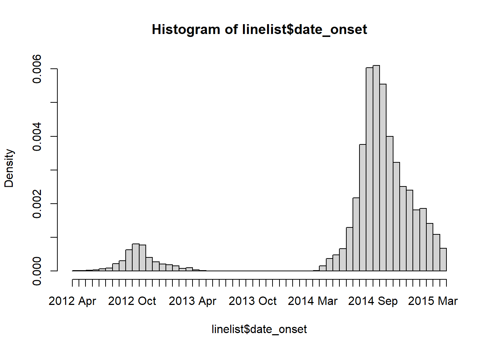

8 Nettoyage de données et fonctions essentielles

Cette page présente les étapes courantes du processus de “nettoyage” d’un jeu de données, et apporte également des explications sur l’utilisation de nombreuses fonctions essentielles dans le traitement des données R.
Pour expliquer le nettoyage des données, cette page commence par l’importation d’un jeu de données brutes de cas dénommé linelist, et présente le processus de nettoyage étape par étape. Dans le code R, cela se manifeste par une chaîne “pipe”, qui fait référence à l’opérateur “pipe” %>% qui fait passer un jeu de données d’une opération à l’autre.
Fonctions principales
Ce manuel met l’accent sur l’utilisation des fonctions provenant du package tidyverse, appartenant à la famille des packages de R. L’essentiel des fonctions de R présentées dans cette page sont listées ci-dessous.
Beaucoup de ces fonctions appartiennent au package R dplyr, qui fournit des fonctions “verbes” pour résoudre les problèmes de manipulation des données (le nom fait référence à un “dataframe”- plier. dplyr fait partie de la famille de packages R tidyverse (qui qui consiste de ggplot2, tidyr, stringr, tibble, purrr, magrittr, et forcats entre autres).
| Fonction | Utilité | Package |
|---|---|---|
%>% |
“pipe” (passe) les données d’une fonction à l’autre | magrittr |
mutate() |
créer, transformer et redéfinir des colonnes | dplyr |
select() |
conserver, supprimer, sélectionner ou renommer des colonnes | dplyr |
rename() |
renommer des colonnes | dplyr |
clean_names() |
standardiser la syntaxe des noms de colonnes | janitor |
as.character(), as.numeric(), as.Date(), etc. |
convertir la classe d’une colonne | base R |
across() |
transformer plusieurs colonnes en même temps | dplyr |
| Fonctions tidyselect | utiliser la logique pour sélectionner des colonnes | tidyselect. |
filter() |
Ne conserver que certaines lignes | dplyr |
distinct() |
dédupliquer des lignes | dplyr*. |
rowwise() |
effectuer ds opérations par/dans chaque ligne | dplyr |
add_row() |
ajouter manuellement des lignes | tibble |
arrange() |
ordonner des lignes | dplyr |
recode() |
re-coder les valeurs dans une colonne | dplyr |
case_when() |
re-coder les valeurs d’une colonne en utilisant des critères logiques plus complexes | dplyr |
replace_na(), na_if(), coalesce() |
des fonctions spéciales pour le recodage | tidyr |
age_categories() et cut() |
créer des groupes catégoriels à partir d’une colonne numérique | epikit et base R |
match_df() |
re-coder/nettoyer des valeurs en utilisant un dictionnaire de données | matchmaker |
which() |
application de critères logiques ; retourne des indices | base R |
Si vous souhaitez comparer ces fonctions aux commandes de Stata ou de SAS, consultez la page Transition vers R.
Vous pouvez rencontrer une méthode alternative de gestion des données à partir du package R data.table avec des opérateurs comme := et l’utilisation fréquente de crochets [ ]. Cette approche et cette syntaxe sont brièvement expliquées dans la page Data Table.
Nomenclature
Dans ce manuel, nous faisons généralement référence aux “colonnes” et aux “lignes” au lieu des “variables” et des “observations”. Comme l’explique cet introduction sur “tidy data”, la plupart des jeux de données statistiques épidémiologiques sont sous le format de lignes, de colonnes et de valeurs.
Les variables contiennent les valeurs qui mesurent le même attribut sous-jacent (comme le groupe d’âge, le résultat ou la date d’apparition). Les observations contiennent toutes les valeurs mesurées sur la même unité (par exemple, une personne, un site ou un échantillon de laboratoire). Ces aspects peuvent donc être plus difficiles à définir de manière précise.
Dans les jeux de données “tidy”, chaque colonne est une variable, chaque ligne est une observation et chaque cellule est une valeur unique. Cependant, certains jeu de données que vous rencontrerez ne correspondront pas à ce format - un jeu de données “étendu” (ou “large”) peut avoir une variable répartie sur plusieurs colonnes (voir un exemple dans la page Pivoter les données). De même, les observations peuvent être réparties sur plusieurs lignes.
La majeure partie de ce manuel porte sur la gestion et la transformation des données, et il est donc plus pertinent de se référer aux structures de données concrètes que sont les lignes et les colonnes qu’aux observations et aux variables plus abstraites. Les exceptions se produisent principalement dans les pages sur l’analyse des données, où vous verrez davantage de références aux variables et aux observations.
8.1 Méthodologie de nettoyage
Cette page passe en revue les étapes importantes du nettoyage, en les ajoutant séquentiellement à une “chaîne de nettoyage”.
Dans l’analyse épidémiologique et le traitement des données, les étapes de nettoyage sont souvent effectuées de manière séquentielle, reliées entre elles. En R, cela se manifeste souvent sous la forme d’un “pipeline” de nettoyage, où le jeu de données brutes est passé ou “pipé” d’une étape de nettoyage à une autre.
De telles chaînes utilisent les fonctions “verbes” de dplyr et l’opérateur pipe %>% de magrittr. Ce pipe commence avec les données “brutes” (“linelist_raw.xlsx”) et se termine avec un dataframe “propre” (linelist) qui peut être utilisé, enregistré, exporté, etc.
Dans un pipeline de nettoyage, l’ordre des étapes est important. Les étapes de nettoyage peuvent inclure :
- Importation des données
- Nettoyage ou modification des noms de colonnes
- Déduplication
- Création et transformation de colonnes (par exemple, recodage ou normalisation des valeurs).
- Sélection ou ajout de lignes
8.2 Charger les packages
Ces lignes de code chargent les paquets nécessaires aux analyses. Dans ce guide, nous mettons l’accent sur p_load() de pacman, qui installe le paquet si nécessaire puis l’importe pour l’utiliser. Vous pouvez également charger les paquets installés avec library() de base R. Voir la page sur bases de R pour plus d’informations sur les paquets R.
pacman::p_load(
rio, # importation données
here, # chemins d'accès relatifs aux fichiers
janitor, # nettoyage des données et tables
lubridate, # manipuler les dates
epikit, # age_categories() fonction
matchmaker, # nettoyage basé sur un dictionnaire
tidyverse # manipulation et visualisation des donnees
)8.3 Import data
Import
Ici, nous importons le fichier Excel “brut” de cas linelist en utilisant la fonction import() du package rio. Cet dernier gère de manière flexible de nombreux types de fichiers (par exemple, .xlsx, .csv, .tsv, .rds). Importation et exportation des données pour plus d’informations et des conseils sur les situations inhabituelles (par exemple, sauter des lignes, définir des valeurs manquantes, importer des feuilles Google, etc.)
Pour reproduire les étapes, cliquer pour télécharger le jeu de données “brutes” linelist (comme fichier .xlsx ).
Si votre jeu de données est important et prend beaucoup de temps à s’importer, il peut valloir le coup de séparer la commande d’importation des étapes de nettoyage, pour que que la donnée “brute” soit enregistré dans un dataframe distinct. Cela permet également de comparer facilement les versions originales et nettoyées.
Ci-dessous, nous importons le fichier Excel brut et le sauvegardons dans le dataframe linelist_raw. Nous supposons que le fichier est situé dans votre répertoire de travail ou à la racine de votre projet R, et donc aucun sous-dossier n’est spécifié dans le chemin du fichier.
linelist_raw <- import("linelist.xlsx")Vous pouvez visualiser les 50 premières lignes du dataframe ci-dessous. Remarque : la fonction de base de R head(n) vous permet de visualiser uniquement les n premières lignes dans la console R.
Vue d’ensemble
Vous pouvez utiliser la fonction skim() du package skimr pour obtenir une vue d’ensemble du dataframe (voir la page sur les Tableaux descriptifs pour plus d’informations). Les colonnes sont résumées par classe/type, telles que “chaîne de caractère”, “numérique”… Note : “POSIXct” est un type de classe de date brute (voir Working with dates).
skimr::skim(linelist_raw)| Name | linelist_raw |
| Number of rows | 6611 |
| Number of columns | 28 |
| _______________________ | |
| Column type frequency: | |
| character | 17 |
| numeric | 8 |
| POSIXct | 3 |
| ________________________ | |
| Group variables | None |
Variable type: character
| skim_variable | n_missing | complete_rate | min | max | empty | n_unique | whitespace |
|---|---|---|---|---|---|---|---|
| case_id | 137 | 0.98 | 6 | 6 | 0 | 5888 | 0 |
| date onset | 293 | 0.96 | 10 | 10 | 0 | 580 | 0 |
| outcome | 1500 | 0.77 | 5 | 7 | 0 | 2 | 0 |
| gender | 324 | 0.95 | 1 | 1 | 0 | 2 | 0 |
| hospital | 1512 | 0.77 | 5 | 36 | 0 | 13 | 0 |
| infector | 2323 | 0.65 | 6 | 6 | 0 | 2697 | 0 |
| source | 2323 | 0.65 | 5 | 7 | 0 | 2 | 0 |
| age | 107 | 0.98 | 1 | 2 | 0 | 75 | 0 |
| age_unit | 7 | 1.00 | 5 | 6 | 0 | 2 | 0 |
| fever | 258 | 0.96 | 2 | 3 | 0 | 2 | 0 |
| chills | 258 | 0.96 | 2 | 3 | 0 | 2 | 0 |
| cough | 258 | 0.96 | 2 | 3 | 0 | 2 | 0 |
| aches | 258 | 0.96 | 2 | 3 | 0 | 2 | 0 |
| vomit | 258 | 0.96 | 2 | 3 | 0 | 2 | 0 |
| time_admission | 844 | 0.87 | 5 | 5 | 0 | 1091 | 0 |
| merged_header | 0 | 1.00 | 1 | 1 | 0 | 1 | 0 |
| …28 | 0 | 1.00 | 1 | 1 | 0 | 1 | 0 |
Variable type: numeric
| skim_variable | n_missing | complete_rate | mean | sd | p0 | p25 | p50 | p75 | p100 |
|---|---|---|---|---|---|---|---|---|---|
| generation | 7 | 1.00 | 16.60 | 5.71 | 0.00 | 13.00 | 16.00 | 20.00 | 37.00 |
| lon | 7 | 1.00 | -13.23 | 0.02 | -13.27 | -13.25 | -13.23 | -13.22 | -13.21 |
| lat | 7 | 1.00 | 8.47 | 0.01 | 8.45 | 8.46 | 8.47 | 8.48 | 8.49 |
| row_num | 0 | 1.00 | 3240.91 | 1857.83 | 1.00 | 1647.50 | 3241.00 | 4836.50 | 6481.00 |
| wt_kg | 7 | 1.00 | 52.69 | 18.59 | -11.00 | 41.00 | 54.00 | 66.00 | 111.00 |
| ht_cm | 7 | 1.00 | 125.25 | 49.57 | 4.00 | 91.00 | 130.00 | 159.00 | 295.00 |
| ct_blood | 7 | 1.00 | 21.26 | 1.67 | 16.00 | 20.00 | 22.00 | 22.00 | 26.00 |
| temp | 158 | 0.98 | 38.60 | 0.95 | 35.20 | 38.30 | 38.80 | 39.20 | 40.80 |
Variable type: POSIXct
| skim_variable | n_missing | complete_rate | min | max | median | n_unique |
|---|---|---|---|---|---|---|
| infection date | 2322 | 0.65 | 2012-04-09 | 2015-04-27 | 2014-10-04 | 538 |
| hosp date | 7 | 1.00 | 2012-04-20 | 2015-04-30 | 2014-10-15 | 570 |
| date_of_outcome | 1068 | 0.84 | 2012-05-14 | 2015-06-04 | 2014-10-26 | 575 |
8.4 Noms de colonnes
En R, les noms de colonnes sont la valeur “d’en-tête” ou la “première cellule” d’une colonne. Ils sont utilisés pour faire référence aux colonnes dans le code et servent de labels par défaut dans les figures.
D’autres logiciels statistiques tels que SAS et STATA utilisent des “labels” qui représentent un format plus long et détaillé des noms de colonnes plus courts existants. Bien que R offre la possibilité d’ajouter des étiquettes de colonne aux données, cela n’est pas mis en avant en pratique. Pour rendre les noms de colonne explicites et descriptifs pour les figures, on ajuste généralement leur affichage dans les commandes de qui créent les graphiques (par exemple, les titres des axes ou des légendes d’une graphique, ou les en-têtes de colonne dans un tableau imprimé - voir la section section échelles de la page Astuces de ggplot et les pages Tableaux pour la présentation). Si vous souhaitez attribuer des étiquettes de colonne dans les données, lisez la suite en ligne ici et ici.
Comme les noms de colonnes sur R sont utilisés très souvent, ils doivent avoir une syntaxe “propre”. Nous suggérons ce qui suit :
- Noms courts
- Pas d’espaces (remplacez-les par des traits de soulignement _ )
- Pas de caractères inhabituels (&, #, <, >, …)
- Nomenclature homogène (par exemple, toutes les colonnes de date nommées comme date_apparition, date_rapport, date_mort…)
Les noms des colonnes de linelist_raw sont affichés ci-dessous en utilisant la fonction names() de base R. On peut voir qu’initialement :
- Certains noms contiennent des espaces (par exemple
date d'infection)
- Des motifs de noms différents sont utilisés pour les dates (
date onsetvs.infection date).
- Il doit y avoir un même nom attribué pour les deux dernières colonnes du fichier .xlsx. Nous le savons parce que le nom de deux colonnes fusionnées (“merged_header”) a été attribué par R à la première colonne, et que la deuxième colonne s’est vue attribuer un nom fictif “…28” (puisqu’elle était alors vide et qu’il s’agit de la 28ième colonne).
names(linelist_raw)## [1] "case_id" "generation" "infection date" "date onset" "hosp date" "date_of_outcome" "outcome"
## [8] "gender" "hospital" "lon" "lat" "infector" "source" "age"
## [15] "age_unit" "row_num" "wt_kg" "ht_cm" "ct_blood" "fever" "chills"
## [22] "cough" "aches" "vomit" "temp" "time_admission" "merged_header" "...28"REMARQUE: Pour faire référence à un nom de colonne qui comprend des espaces, entourez le nom de contre-tirets, par exemple : linelist$`'\x60infection date\x60'`. Notez que sur votre clavier, le contre-tiret (`) est différent du guillemet simple (’).
Labels
D’autres logiciels statistiques tels que SAS ont des labels de variables.
Nettoyage automatique
La fonction clean_names() du package janitor normalise les noms de colonnes et les rend uniques en effectuant les opérations suivantes :
- Convertit tous les noms pour qu’ils ne soient composés que de underscores (sous-tiret/tiret “bas”/tiret 8), de chiffres et de lettres.
- Les caractères accentués sont translittérés en ASCII (par exemple, le o allemand avec tréma devient “o”, le “enye” espagnol devient “n”).
- La préférence de capitalisation pour les nouveaux noms de colonnes peut être spécifiée en utilisant l’argument
case =(“snake” est le défaut, les alternatives incluent “phrase”, “title”, “small_camel”…)
- Vous pouvez spécifier des remplacements de noms spécifiques en fournissant un vecteur à l’argument
replace =(par exemple,replace = c(onset = "date_of_onset"))
Pour en savoir plus, voici la vignette en ligne. .
Ci-dessous, le pipeline de nettoyage commence par utiliser clean_names() sur le dataframe contenant les données brutes.
# pipe le jeu de données brutes à travers clean_names(), puis assigne le resultat à un nouveau dataframe, "linelist"
linelist <- linelist_raw %>%
janitor::clean_names()
# voir les nouveaux noms de colonnes
names(linelist)## [1] "case_id" "generation" "infection_date" "date_onset" "hosp_date" "date_of_outcome" "outcome"
## [8] "gender" "hospital" "lon" "lat" "infector" "source" "age"
## [15] "age_unit" "row_num" "wt_kg" "ht_cm" "ct_blood" "fever" "chills"
## [22] "cough" "aches" "vomit" "temp" "time_admission" "merged_header" "x28"NOTE: le dernier nom de colonne “…28” est changé pour devenir “x28”.
Nettoyage manuel des noms
Il est souvent nécessaire de renommer les colonnes manuellement, même après l’étape de normalisation ci-dessus. Ci-dessous, le changement de nom est effectué en utilisant la fonction rename() du package dplyr, dans une chaine de commandes pipées. rename() utilise le style NEW = OLD - le nouveau nom de colonne est donné avant l’ancien nom de colonne.
Ci-dessous, une commande de re-nommage est ajoutée au pipeline de nettoyage. Des espaces ont été ajoutés stratégiquement pour aligner le code afin de faciliter la lecture.
# NETTOYAGE: enchainement de commandes 'PIPE' (debute avec la donnée brute et suivi de pipes avec les commandes pour le nettoyage)
##################################################################################
linelist <- linelist_raw %>%
# standardiser la syntaxe des noms de colonnes
janitor::clean_names() %>%
# renommer manuellement les noms de colonnes
# Nouveau noms # Ancien noms
rename(date_infection = infection_date,
date_hospitalisation = hosp_date,
date_outcome = date_of_outcome)Vous pouvez maintenant voir que les noms des colonnes ont été modifiés :
## [1] "case_id" "generation" "date_infection" "date_onset" "date_hospitalisation"
## [6] "date_outcome" "outcome" "gender" "hospital" "lon"
## [11] "lat" "infector" "source" "age" "age_unit"
## [16] "row_num" "wt_kg" "ht_cm" "ct_blood" "fever"
## [21] "chills" "cough" "aches" "vomit" "temp"
## [26] "time_admission" "merged_header" "x28"Renommer par la position des colonnes
Vous pouvez également renommer par position de colonne, au lieu du nom de colonne, par exemple :
#rename(newNameForFirstColumn = 1,
#newNameForSecondColumn = 2)Renommer via select() et summarise()
Comme raccourci, vous pouvez aussi renommer les colonnes dans les fonctions dplyr select() et summarise(). select() est utilisé pour ne garder que certaines colonnes (et est couvert plus loin dans cette page). La fonction summarise() est traitée dans les pages Regroupement des données et Tableaux descriptifs. Ces fonctions utilisent également le format nouveau_nom = ancien_nom. Voici un exemple :
linelist_raw %>%
select(# NOUVEAU nom # ANCIEN nom
date_infection = `infection date`, # renommer and CONSEVER que ces colonnes
date_hospitalisation = `hosp date`)Autres challenges
fichiers excels sans noms de colonnes
R ne peut pas travailler sur des jeux de données qui n’ont pas de noms de colonne (en-têtes). Ainsi, si vous importez un jeu de données Excel contenant des données mais pas d’en-tête de colonne, R remplira les en-têtes avec des noms tels que “…1” ou “…2”. Le chiffre représente le numéro de la colonne (par exemple, si la quatrième colonne de l’ensemble de données n’a pas d’en-tête, R la nommera “…4”).
Vous pouvez nettoyer ces noms manuellement en faisant référence à leur numéro de position (voir l’exemple ci-dessus), ou au nom qui leur est attribué (linelist_raw$...1).
Fusion des noms de colonnes et de cellules sur Excel
La fusion de cellules dans un fichier Excel est un phénomène courant lors de la réception de données. Comme expliqué dans Transition vers R, les cellules fusionnées peuvent être agréables pour la lecture humaine des données, mais ne sont pas des “tidy data” et posent de nombreux problèmes pour la lecture automatique des données. R ne peut pas prendre en compte les cellules fusionnées.
Rappelez aux personnes chargées de la saisie des données que les données lisibles par l’homme ne sont pas les mêmes que celles lisibles par la machine. Efforcez-vous de former les utilisateurs aux principes des [Tidy Data] (https://r4ds.had.co.nz/tidy-data.html). Dans la mesure du possible, essayez de modifier les procédures pour que les données arrivent dans un format tidy, sans cellules fusionnées.
- Chaque variable doit avoir sa propre colonne.
- Chaque observation doit avoir sa propre ligne.
- Chaque valeur doit avoir sa propre cellule.
Lorsque vous utilisez la fonction import() de rio, la valeur d’une cellule fusionnée sera assignée à la première cellule et les cellules suivantes seront vides.
Une solution pour gérer les cellules fusionnées est d’importer les données avec la fonction readWorkbook() du package openxlsx. Définissez l’argument fillMergedCells = TRUE. Cela donne la valeur d’une cellule fusionnée à toutes les cellules de la plage de fusion.
linelist_raw <- openxlsx::readWorkbook("linelist_raw.xlsx", fillMergedCells = TRUE)DANGERS: Si les noms de colonnes sont fusionnés avec readWorkbook(), vous vous retrouverez avec des noms de colonnes en double, que vous devrez corriger manuellement - R ne fonctionne pas bien avec des noms de colonnes en double ! Vous pouvez les renommer en faisant référence à leur position (par exemple colonne 5), comme expliqué dans la section sur le nettoyage manuel des noms de colonnes.
8.5 Sélectionner ou réorganiser les colonnes
Utilisez select() de dplyr pour sélectionner les colonnes que vous voulez conserver, et pour spécifier leur ordre dans le cadre de données.
Avertissement: Dans les exemples ci-dessous, le dataframe linelist est modifié avec select() et affiché, mais pas enregistré. Ceci est pour les besoins de la démonstration. Les noms de colonnes modifiés sont renvoyés en passant (pipe)le dataframe dans names().
Voici TOUS les noms de colonnes dans la liste de lignes à ce stade de la chaîne de nettoyage :.
names(linelist)## [1] "case_id" "generation" "date_infection" "date_onset" "date_hospitalisation"
## [6] "date_outcome" "outcome" "gender" "hospital" "lon"
## [11] "lat" "infector" "source" "age" "age_unit"
## [16] "row_num" "wt_kg" "ht_cm" "ct_blood" "fever"
## [21] "chills" "cough" "aches" "vomit" "temp"
## [26] "time_admission" "merged_header" "x28"Conserver des colonnes
Selectionner uniquement les colonnes que vous voulez conserver
Mettez leurs noms dans la commande select(), sans guillemets. Elles apparaîtront dans le dataframe dans l’ordre que vous avez indiqué. Notez que si vous incluez une colonne qui n’existe pas, R retournera une erreur (voir l’utilisation de any_of() ci-dessous si vous ne voulez pas d’erreur dans cette situation).
# jeu de donnée linelist est pipé à travers la commande select() et names() affiche les noms de colones
linelist %>%
select(case_id, date_onset, date_hospitalisation, fever) %>%
names() # affiche le nom des colonnes## [1] "case_id" "date_onset" "date_hospitalisation" "fever"fonction d’aide “tidyselect”
Ces fonctions d’aide existent pour faciliter la spécification des colonnes à conserver, à éliminer ou à transformer. Elles sont issues du package tidyselect, qui est inclus dans tidyverse et qui sous-tend la façon dont les colonnes sont sélectionnées dans les fonctions dplyr.
Par exemple, si vous voulez réordonner les colonnes, everything() est une fonction utile qui correspond à “toutes les autres colonnes non encore mentionnées”. La commande ci-dessous déplace les colonnes date_onset et date_hospitalisation au début (à gauche) du jeu de donnée, mais conserve toutes les autres colonnes par la suite. Notez que everything() est écrit avec des parenthèses vides :
# deplacer les colonnes data_onset et date_hospilisation au debut du jeu de donnée
linelist %>%
select(date_onset, date_hospitalisation, everything()) %>%
names()## [1] "date_onset" "date_hospitalisation" "case_id" "generation" "date_infection"
## [6] "date_outcome" "outcome" "gender" "hospital" "lon"
## [11] "lat" "infector" "source" "age" "age_unit"
## [16] "row_num" "wt_kg" "ht_cm" "ct_blood" "fever"
## [21] "chills" "cough" "aches" "vomit" "temp"
## [26] "time_admission" "merged_header" "x28"Voici d’autres fonctions d’aide “tidyselect” qui fonctionnent également dans les fonctions dplyr comme select(), across(), et summarise() :
everything()- toutes les autres colonnes non mentionnées
last_col()- la dernière colonne
where()- applique une fonction à toutes les colonnes et sélectionne celles qui sont VRAIES.
contains()- colonnes contenant une chaîne de caractères.- Exemple :
select(contains("time")).
- Exemple :
starts_with()- correspond à un préfixe spécifié.- Exemple :
select(starts_with("date_")).
- Exemple :
ends_with()- correspond à un suffixe spécifié.- exemple :
select(ends_with("_post"))
- exemple :
matches()- pour appliquer une expression régulière (regex)- exemple :
select(matches("[pt]al"))
- exemple :
num_range()- une plage numérique comme x01, x02, x03
any_of()- correspond si la colonne existe mais ne renvoie pas d’erreur si elle n’est pas trouvée.- Exemple :
select(any_of(date_onset, date_death, cardiac_arrest)).
- Exemple :
De plus, utilisez des opérateurs normaux tels que c() pour lister plusieurs colonnes, : pour des colonnes consécutives, ! pour l’opposé, & pour AND, et | pour OR.
Utilisez where() pour spécifier des critères logiques pour les colonnes. Si vous fournissez une fonction dans where(), n’incluez pas les parenthèses vides de la fonction. La commande ci-dessous sélectionne les colonnes de la classe Numeric.
# selectionner les colonnes de classe Numeric
linelist %>%
select(where(is.numeric)) %>%
names()## [1] "generation" "lon" "lat" "row_num" "wt_kg" "ht_cm" "ct_blood" "temp"Utilisez contains() pour ne sélectionner que les colonnes dont le nom contient une chaîne de caractères donnée. ends_with() et starts_with() apportent plus de nuances.
# Selectionner des colonnes qui contiennent une caractere defini
linelist %>%
select(contains("date")) %>%
names()## [1] "date_infection" "date_onset" "date_hospitalisation" "date_outcome"La fonction matches() fonctionne de la même manière que contains() mais on peut lui fournir une expression régulière (voir la page sur les Caractères et chaînes de caractères), comme plusieurs chaînes de caractères séparées par des barres OR à l’intérieur des parenthèses :
# searched for multiple character matches
# rechercher plusieurs caracteres
linelist %>%
select(matches("onset|hosp|fev")) %>% # noter le symbole de OR "|"
names()## [1] "date_onset" "date_hospitalisation" "hospital" "fever"AVERTISSEMENT: Si un nom de colonne que vous fournissez spécifiquement n’existe pas dans les données, il peut retourner une erreur et arrêter votre code. Pensez à utiliser any_of() pour citer des colonnes qui peuvent ou non exister, particulièrement utile dans les sélections négatives (enlever).
Une seule de ces colonnes existe, mais aucune erreur n’est produite et le code continue sans arrêter votre chaîne de nettoyage.
linelist %>%
select(any_of(c("date_onset", "village_origin", "village_detection", "village_residence", "village_travel"))) %>%
names()## [1] "date_onset"Supprimer colonnes
Indiquez les colonnes à supprimer en plaçant un symbole moins “-” devant le nom de la colonne (par exemple, select(-outcome)), ou un vecteur de noms de colonnes (comme ci-dessous). Toutes les autres colonnes seront conservées.
linelist %>%
select(-c(date_onset, fever:vomit)) %>% #supprimer la colonne date_onset et tout les colonnes allant de fever à vomit
names()## [1] "case_id" "generation" "date_infection" "date_hospitalisation" "date_outcome"
## [6] "outcome" "gender" "hospital" "lon" "lat"
## [11] "infector" "source" "age" "age_unit" "row_num"
## [16] "wt_kg" "ht_cm" "ct_blood" "temp" "time_admission"
## [21] "merged_header" "x28"Vous pouvez également supprimer une colonne en utilisant la syntaxe R base, en la définissant comme NULL. Par exemple :
linelist$date_onset <- NULL
# supprimer colonne avec la syntaxe native de RAutres
select() peut aussi être utilisé comme une commande indépendante (pas dans une chaîne de tuyaux). Dans ce cas, le premier argument est le dataframe original sur lequel on veut travailler.
# creer un nouvelle donnée linelist avec des colonnes id et age-related
linelist_age <- select(linelist, case_id, contains("age"))
# afficher les noms de colonnes
names(linelist_age)## [1] "case_id" "age" "age_unit"ajouter à la chaine de commande pipé
Dans la linelist_raw, il y a quelques colonnes dont nous n’avons pas besoin : row_num, merged_header, et x28. Nous les supprimons avec une commande select() dans la chaîne de nettoyage :
# NETTOYAGE: enchainement de commandes 'PIPE' (debute avec la donnée brute et le pipes avec les commandes pour le nettoyage)
##################################################################################
# Debuter le processus de Nettoyage pipé
###########################
linelist <- linelist_raw %>%
# standardiser le syntaxe des noms de colonnes
janitor::clean_names() %>%
# renommer manuellement les colonnes
# NOUVEAU nom # ANCIEN nom
rename(date_infection = infection_date,
date_hospitalisation = hosp_date,
date_outcome = date_of_outcome) %>%
# CI DESSUS LES ETAPES DU NETTOYAGE DEJA ABORDEES EN AMONT
#####################################################
# supprimer des colonnes
select(-c(row_num, merged_header, x28))8.6 Deduplication
Voir la page du manuel sur la déduplication pour de nombreuses options sur la façon de dédupliquer les données. Seul un exemple très simple de déduplication de lignes est présenté ici.
Le package dplyr offre la fonction distinct(). Cette fonction examine chaque ligne et réduit le dataframe à seulement les lignes uniques. C’est-à-dire qu’elle supprime les lignes qui sont à 100% des doublons.
Lors de l’évaluation des lignes dupliquées, elle prend en compte un eventail de colonnes defini - par défaut, elle considère toutes les colonnes. Comme le montre la page dediée à la déduplication, vous pouvez ajuster cet eventail de colonnes afin que l’unicité des lignes ne soit évaluée que par rapport à certaines colonnes.
Dans cet exemple simple, nous ajoutons simplement la commande vide distinct() à la chaîne de commande pipé. Cela permet de s’assurer qu’il n’y a pas de lignes qui sont des doublons à 100% d’autres lignes (évaluées sur toutes les colonnes).
Nous commençons avec nrow(linelist) lignes dans linelist.
linelist <- linelist %>%
distinct()Après la déduplication, il y a nrow(linelist) lignes. Toutes les lignes supprimées auraient été des doublons à 100% d’autres lignes.
Ci-dessous, la commande distinct() est ajoutée à la chaîne de nettoyage :
# NETTOYAGE: enchainement de commandes 'PIPE' (debute avec la donnée brute et le pipe avec les commandes pour le nettoyage)
##################################################################################
# Debuter le processus de Nettoyage pipé
###########################
linelist <- linelist_raw %>%
# standardiser le syntaxe des noms de colonnes
janitor::clean_names() %>%
# Renommer manuellement les noms de colonnes
# Nouveau nom # Ancien nom
rename(date_infection = infection_date,
date_hospitalisation = hosp_date,
date_outcome = date_of_outcome) %>%
# supprimer les colonnes
select(-c(row_num, merged_header, x28)) %>%
# CI DESSUS LES ETAPES DU NETTOYAGE DEJA ABORDEES EN AMONT
#####################################################
# Supprimer les doublons
distinct()8.7 Creation et transformation de colonne
Nous recommandons d’utiliser la fonction mutate() du package dplyr pour ajouter une nouvelle colonne, ou pour modifier une colonne existante.
Vous trouverez ci-dessous un exemple de création d’une nouvelle colonne avec mutate(). La syntaxe est la suivante : mutate(nouveau_nom_de_colonne = valeur ou transformation).
Dans Stata, ceci est similaire à la commande generate, mais la fonction mutate() de R peut également être utilisée pour modifier une colonne existante.
Nouvelles colonnes
La commande mutate() la plus basique pour créer une nouvelle colonne peut ressembler à ceci. Elle crée une nouvelle colonne new_col dont la valeur dans chaque ligne est 10.
linelist <- linelist %>%
mutate(new_col = 10)Vous pouvez également référencer des valeurs dans d’autres colonnes, pour effectuer des calculs. Ci-dessous, une nouvelle colonne bmi est créée pour contenir l’indice de masse corporelle (IMC) pour chaque cas - tel que calculé en utilisant la formule IMC = kg/m^2, en utilisant la colonne ht_cm et la colonne wt_kg.
linelist <- linelist %>%
mutate(bmi = wt_kg / (ht_cm/100)^2)Si vous créez plusieurs nouvelles colonnes, séparez-les par une virgule et une nouvelle ligne. Vous trouverez ci-dessous des exemples de nouvelles colonnes, y compris celles qui sont constituées de valeurs provenant d’autres colonnes combinées à l’aide de str_glue() du package stringr (voir la page sur Caractères et chaînes de caractères.
new_col_demo <- linelist %>%
mutate(
new_var_dup = case_id,
# nouveau colonne= dupliquer ou copier une autre colonne existante
new_var_static = 7, # nouveau colonne = meme valeur sur toute les lignes
new_var_static = new_var_static + 5,
# On peut ecraser une colonne et le recreer par un calcul utilisant d'autres variables
new_var_paste = stringr::str_glue("{hospital} on ({date_hospitalisation})") # nouveau colonne = pasting together values from other columns
# regrouper les valeurs de differentes colonnes
) %>%
select(case_id, hospital, date_hospitalisation, contains("new"))
# montrer seulement les nouveaux colonnes pour besoin de demonstrationExaminez les nouvelles colonnes. À des fins de démonstration, seules les nouvelles colonnes et les colonnes utilisées pour les créer sont affichées :
CONSEILS: Une variante de mutate() est la fonction transmute(). Cette fonction ajoute une nouvelle colonne comme mutate(), mais supprime également toutes les autres colonnes que vous ne mentionnez pas entre ses parenthèses..
# CACHER POUR LECTEUR
# Supprimer les nouveaux colonnes demo créees en haut
# linelist <- linelist %>%
# select(-contains("new_var"))Convertir la classe des colonnes
Les colonnes contenant des valeurs qui sont des dates, des nombres ou des valeurs logiques (VRAI/FAUX) ne se comporteront comme prévu que si elles sont dans la classe appropriée. Il y a une différence entre “2” de classe caractère et 2 de classe numérique !
Il existe des moyens de définir la classe des colonnes avec les commandes d’importation, mais cela est souvent fastidieux. Consultez la section Bases de R sur les classes d’objets pour en savoir plus sur la conversion de la classe des objets et des colonnes.
Tout d’abord, effectuons quelques vérifications sur les colonnes importantes pour voir si elles sont de la bonne classe. Nous avons également vu cela au début lorsque nous avons lancé skim().
Actuellement, la classe de la colonne age est un caractère. Pour effectuer des analyses quantitatives, nous avons besoin que ces nombres soient reconnus comme numériques !
class(linelist$age)## [1] "character"La classe de la colonne date_onset est aussi un caractère ! Pour effectuer des analyses, ces dates doivent être reconnues comme des dates!
class(linelist$date_onset)## [1] "character"Pour résoudre ce problème, utilisez la capacité de mutate() pour redéfinir une colonne avec une transformation. Nous définissons la colonne comme elle-même, mais convertie en une classe différente. Voici un exemple de base, convertissons ou assurerons nous que la colonne age est de classe Numeric :
linelist <- linelist %>%
mutate(age = as.numeric(age))De la même manière, vous pouvez utiliser as.character() et as.logical(). Pour convertir en classe Factor, vous pouvez utiliser factor() de base R ou as_factor() de forcats. Pour en savoir plus, consultez la page Facteurs.
Vous devez faire attention lorsque vous convertissez en classe Date. Plusieurs méthodes sont expliquées sur la page Manipuler les dates. En général, les valeurs brutes de la date doivent toutes être dans le même format pour que la conversion fonctionne correctement (par exemple “MM/JJ/AAAA”, ou “JJ MM AAAA”). Après la conversion en classe Date, vérifiez vos données pour confirmer que chaque valeur a été convertie correctement.
Données groupées
Si votre dataframe est déjà groupée (voir la page sur Travailler sur des données groupées), mutate() peut se comporter différemment que si la base de données n’est pas groupée. Toutes les fonctions de résumé, comme mean(), median(), max(), etc. seront calculées par groupe, et non par toutes les lignes.
# Normalisation de l'age en fonction la moyenne
linelist %>%
mutate(age_norm = age / mean(age, na.rm=T))
# Normalisation de l'age en fonction de la moyenne du jeu donne groupe à partir de la colonne hospital
linelist %>%
group_by(hospital) %>%
mutate(age_norm = age / mean(age, na.rm=T))Pour en savoir plus sur l’utilisation de mutate () sur des blocs de données groupés, consultez la documentation tidyverse mutate.
Transformer plusieurs colonnes
Souvent, pour écrire un code concis, vous voulez appliquer la même transformation à plusieurs colonnes à la fois. Une transformation peut être appliquée à plusieurs colonnes à la fois en utilisant la fonction across() du package dplyr (également contenu dans le package tidyverse). across() peut être utilisé avec n’importe quelle fonction dplyr, mais est couramment utilisé dans select(), mutate(), filter(), ou summarise(). Voir comment il est appliqué à summarise() dans la page sur les Tableaux descriptifs.
Spécifiez les colonnes à l’argument .cols = et la ou les fonctions à appliquer à .fns =. Tout argument supplémentaire à fournir à la fonction .fns peut être inclus après une virgule, toujours dans across().
across() selection de colonne
Spécifiez les colonnes à l’argument .cols =. Vous pouvez les nommer individuellement, ou utiliser les fonctions d’aide “tidyselect”. Spécifiez la fonction en argument .fns =. Notez qu’en utilisant le mode fonction démontré ci-dessous, la fonction est écrite sans ses parenthèses ( ).
Ici, la transformation as.character() est appliquée à des colonnes spécifiques nommées dans across().
linelist <- linelist %>%
mutate(across(.cols = c(temp, ht_cm, wt_kg), .fns = as.character))Les fonctions d’aide “tidyselect” sont disponibles pour vous aider à spécifier les colonnes. Elles sont détaillées ci-dessus dans la section sur la sélection et le réordonnancement des colonnes, et elles incluent : everything(), last_col(), where(), starts_with(), ends_with(), contains(), matches(), num_range() et any_of().
Voici un exemple de la façon dont on peut changer toutes les colonnes en classe de caractères :
# Changer toutes les colonnes en classe caractère
linelist <- linelist %>%
mutate(across(.cols = everything(), .fns = as.character))Convertissez en caractères toutes les colonnes dont le nom contient la chaîne “date” (notez le placement des virgules et des parenthèses) :
# Changer toutes les colonnes en classe caractère
linelist <- linelist %>%
mutate(across(.cols = contains("date"), .fns = as.character))Ci-dessous, un exemple de mutation des colonnes qui sont actuellement de classe POSIXct (une classe de date brute qui montre les timestamps) - en d’autres termes, où la fonction is.POSIXct() évalue à TRUE. Ensuite, nous voulons appliquer la fonction as.Date() à ces colonnes pour les convertir en une classe normale de Date.
linelist <- linelist %>%
mutate(across(.cols = where(is.POSIXct), .fns = as.Date))- Notez que dans
across(), nous utilisons également la fonctionwhere()caris.POSIXctest évalué à TRUE ou FALSE.
- Notez que
is.POSIXct()fait partie du paquet lubridate. D’autres fonctions “is” similaires commeis.character(),is.numeric(), etis.logical()sont issues de base R.
fonction across()
Vous pouvez lire la documentation avec ?across pour des détails sur la façon de fournir des fonctions à across(). Quelques points récapitulatifs : il y a plusieurs façons de spécifier la ou les fonctions à exécuter sur une colonne et vous pouvez même définir vos propres fonctions :
- Vous pouvez fournir le nom de la fonction seul (par exemple
meanouas.character)
- Vous pouvez fournir la fonction dans le style purrr (par exemple
~ mean(.x, na.rm = TRUE)) (voir [cette page][#iteration])
- Vous pouvez spécifier plusieurs fonctions en fournissant une liste (par exemple,
list(mean = mean, n_miss = ~ sum(is.na(.x))).- Si vous fournissez plusieurs fonctions, plusieurs colonnes transformées seront retournées par colonne d’entrée, avec des noms uniques dans le format
col_fn. Vous pouvez ajuster la façon dont les nouvelles colonnes sont nommées avec l’argument.names =en utilisant la syntaxe glue (voir la page sur Caractères et chaînes de caractères) où{.col}et{.fn}sont des raccourcis pour la colonne d’entrée et la fonction.
- Si vous fournissez plusieurs fonctions, plusieurs colonnes transformées seront retournées par colonne d’entrée, avec des noms uniques dans le format
Voici quelques ressources en ligne sur l’utilisation de across() : creator Hadley Wickham’s thoughts/rationale
coalesce()
Cette fonction dplyr trouve la première valeur non manquante à chaque position. Elle “remplit” les valeurs manquantes avec la première valeur disponible dans l’ordre que vous spécifiez.
Voici un exemple En dehors du contexte de dataframe : Disons que vous avez deux vecteurs, l’un contenant le village de détection du patient et l’autre contenant le village de résidence du patient. Vous pouvez utiliser coalesce pour choisir la première valeur non manquante pour chaque indice :
village_detection <- c("a", "b", NA, NA)
village_residence <- c("a", "c", "a", "d")
village <- coalesce(village_detection, village_residence)
village # print## [1] "a" "b" "a" "d"Cela fonctionne de la même manière si vous fournissez des colonnes de cadre de données : pour chaque ligne, la fonction attribuera la nouvelle valeur de la colonne avec la première valeur non manquante dans les colonnes que vous avez fournies (dans l’ordre fourni).
linelist <- linelist %>%
mutate(village = coalesce(village_detection, village_residence))Il s’agit d’un exemple d’opération “ligne par ligne”. Pour des calculs par rangée plus complexes, voir la section ci-dessous sur les calculs par rangée.
mathématique cumulative
Si vous voulez qu’une colonne reflète somme/moy/min/max cumulée etc. pour les differntes observations du dataframe, utilisez les fonctions suivantes :
cumsum() renvoie la somme cumulée, comme indiqué ci-dessous :
sum(c(2,4,15,10)) # retourne un nombre unique## [1] 31cumsum(c(2,4,15,10)) # renvoie la somme cumulé a chaque élémenet parcouru du vecteur ## [1] 2 6 21 31Ceci peut être utilisé dans un dataframe lors de la création d’une nouvelle colonne. Par exemple, pour calculer le nombre cumulé de cas par jour dans une épidémie, envisagez un code comme celui-ci :
cumulative_case_counts <- linelist %>% # Commencons avec la donnne linelist
count(date_onset) %>% # Creons une colonne 'n' qui totalise le nombre de ligne par jour
mutate(cumulative_cases = cumsum(n)) # nouveau colonne representant la somme cumulée par ligneVoici les 10 premières rangées :
head(cumulative_case_counts, 10)## date_onset n cumulative_cases
## 1 2012-04-15 1 1
## 2 2012-05-05 1 2
## 3 2012-05-08 1 3
## 4 2012-05-31 1 4
## 5 2012-06-02 1 5
## 6 2012-06-07 1 6
## 7 2012-06-14 1 7
## 8 2012-06-21 1 8
## 9 2012-06-24 1 9
## 10 2012-06-25 1 10Voir la page sur les Courbes épidémiques pour savoir comment tracer l’incidence cumulée avec l’épicurve.
Voir aussi :
cumsum(), cummean(), cummin(), cummax(), cumany(), cumall().
Utiliser les fonctions base de R
Pour définir une nouvelle colonne (ou redéfinir une colonne) en utilisant base R, écrivez le nom du cadre de données, relié par $, à la nouvelle colonne (ou à la colonne à modifier). Utilisez l’opérateur d’affectation <- pour définir la ou les nouvelles valeurs. N’oubliez pas que lorsque vous utilisez base R, vous devez à chaque fois spécifier le nom du dataframe avant le nom de la colonne (par exemple, dataframe$column). Voici un exemple de création de la colonne bmi en utilisant base R :
linelist$bmi = linelist$wt_kg /
(linelist$ht_cm /100) ^ 2Ajouter à la chaine de commande pipé
Au-dessous, une nouvelle colonne est ajoutée à la chaîne de tuyaux et certaines classes sont converties.
# NETTOYAGE: enchainement de commandes 'PIPE' (debute avec la donnée brute et le pipes avec les commandes pour le nettoyage)
##################################################################################
# Debuter le processus de Nettoyage pipé
###########################
linelist <- linelist_raw %>%
# standardiser le syntaxe des noms de colonnes
janitor::clean_names() %>%
# renommer manuellement les noms de colonnes
# Nouveau nom # ANCIEN nom
rename(date_infection = infection_date,
date_hospitalisation = hosp_date,
date_outcome = date_of_outcome) %>%
# supprimer colonne
select(-c(row_num, merged_header, x28)) %>%
# supprimer les doublons
distinct() %>%
# CI DESSUS LES ETAPES DU NETTOYAGE DEJA ABORDEES EN AMONT
###################################################
# ajouter un nouveau colonne
mutate(bmi = wt_kg / (ht_cm/100)^2) %>%
# convertir les classes des colonnes
mutate(across(contains("date"), as.Date),
generation = as.numeric(generation),
age = as.numeric(age)) 8.8 Re-coder les valeurs
Voici quelques situations dans lesquelles vous devez recoder (modifier) des valeurs :
- pour modifier une valeur spécifique (par exemple, une date dont l’année ou le format est incorrect)
- pour uniformiser des valeurs dont l’orthographe n’est pas la même
- pour créer une nouvelle colonne de valeurs catégorielles
- pour créer une nouvelle colonne de catégories numériques (par exemple, des catégories d’âge).
Valeurs spécifiques
Pour modifier les valeurs manuellement, vous pouvez utiliser la fonction recode() au sein de la fonction mutate().
Imaginez qu’il y ait une date érronée dans les données (par exemple “2014-14-15”) : vous pouvez corriger la date manuellement dans les données brutes, ou vous pouvez operer le changement dans le pipeline de nettoyage via mutate() et recode(). Cette dernière solution est plus transparente et reproductible pour toute autre personne cherchant à comprendre ou à répéter votre analyse.
# Corriger les valeurs erronnées # ancienne valeur # nouvelle valeur
linelist <- linelist %>%
mutate(date_onset = recode(date_onset, "2014-14-15" = "2014-04-15"))La ligne mutate() ci-dessus peut être lue comme : “muter la colonne date_onset pour qu’elle soit égale à la colonne date_onset recodée de façon à ce que l’ancienne Valeur soit changée en Nouvelle Valeur”. Notez que ce modèle (Ancienne = Nouvelle) pour recode() est l’opposé de la plupart des modèles R (new = old). La communauté de développement de R travaille à la révision de ce modèle.
Voici un autre exemple de recodage de plusieurs valeurs dans une même colonne.
Dans linelist, les valeurs de la colonne “hospital” doivent être nettoyées. Il y a plusieurs orthographes différentes et de nombreuses valeurs manquantes.
table(linelist$hospital, useNA = "always") ##
## Central Hopital Central Hospital Hospital A
## 11 457 290
## Hospital B Military Hopital Military Hospital
## 289 32 798
## Mitylira Hopital Mitylira Hospital Other
## 1 79 907
## Port Hopital Port Hospital St. Mark's Maternity Hospital (SMMH)
## 48 1756 417
## St. Marks Maternity Hopital (SMMH) <NA>
## 11 1512# Afficher un tableau avec toutes les valeurs uniques y compris les les valeurs manquantesLa commande recode() ci-dessous redéfinit la colonne “hospital” comme la colonne actuelle “hospital”, mais avec les changements de recode spécifiés. N’oubliez pas les virgules après chacun d’eux !
linelist <- linelist %>%
mutate(hospital = recode(hospital,
# Pour reference: ANCIEN =NOUVEAU
"Mitylira Hopital" ="Military Hospital",
"Mitylira Hospital" ="Military Hospital",
"Military Hopital" ="Military Hospital",
"Port Hopital" = "Port Hospital",
"Central Hopital" = "Central Hospital",
"other" = "Other",
"St. Marks Maternity Hopital (SMMH)" = "St. Mark's Maternity Hospital (SMMH)"
))Nous voyons maintenant que les orthographes de la colonne hospital ont été corrigées et consolidées :
table(linelist$hospital, useNA = "always")##
## Central Hospital Hospital A Hospital B
## 468 290 289
## Military Hospital Other Port Hospital
## 910 907 1804
## St. Mark's Maternity Hospital (SMMH) <NA>
## 428 1512CONSEIL: Le nombre d’espaces avant et après un signe égal n’a pas d’importance. Rendez votre code plus facile à lire en alignant le signe = pour toutes ou la plupart des lignes. En outre, envisagez d’ajouter une ligne de commentaires afin de clarifier pour les futurs lecteurs quel côté est l’ANCIEN et quel côté est le NOUVEAU.
CONSEIL: Parfois, une valeur de caractère vide existe dans un jeu de donnée (non reconnue comme la valeur de R pour les manquants - NA). Vous pouvez référencer cette valeur avec deux guillemets sans espace entre eux (““).
par logique
Nous démontrons ci-dessous comment recoder les valeurs d’une colonne en utilisant la logique et les conditions :
- Utiliser
replace(),ifelse()etif_else()pour une logique simple. - Utilisation de
case_when()pour une logique plus complexe.
Logique simple
replace()
Pour recoder avec des critères logiques simples, vous pouvez utiliser replace() dans mutate(). replace() est une fonction de base R. Utilisez une condition logique pour spécifier les lignes à changer . La syntaxe générale est la suivante :
mutate(col_a_change = replace(col_a_changer, condition sur les lignes, nouvelle valeur)).
Une situation courante pour utiliser replace() est la modification d’une seule valeur dans une ligne, en utilisant un identifiant propre à une ligne . Ci-dessous, le sexe est changé en “Female” dans la ligne où la colonne case_id est “2195”.
# Exemple : Changer en "Female" le genre pour une observation definie
linelist <- linelist %>%
mutate(gender = replace(gender, case_id == "2195", "Female"))La commande équivalente utilisant la syntaxe base R et les crochets d’indexation [ ] est presenté ci-dessous. Elle se lit comme suit : “Changez la valeur de la colonne gender du dataframe linelist (pour les lignes où la colonne case_id de linelist a la valeur ‘2195’) en ‘Female’”.
linelist$gender[linelist$case_id == "2195"] <- "Female"ifelse() et if_else()
Une autre fonction pour la logique simple est ifelse() et son partenaire if_else(). Cependant, dans la plupart des cas de recodage, il est plus clair d’utiliser case_when() (détaillé ci-dessous). Ces commandes “if else” sont des versions simplifiées d’une instruction de programmation if et else. La syntaxe générale est la suivante :
ifelse(condition, valeur à renvoyer si la condition vaut VRAI, valeur à renvoyer si la condition vaut FAUX).
Ci-dessous, la colonne source_known est définie. Sa valeur dans une ligne donnée est définie comme “connue” si la valeur de la colonne source de cette ligne n’est pas manquante. Si la valeur de la colonne source est manquante, alors la valeur de la colonne source_known est définie comme “inconnue”.
linelist <- linelist %>%
mutate(source_known = ifelse(!is.na(source), "known", "unknown"))if_else() est une version spéciale de dplyr qui gère les dates. Notez que si la valeur “true” est une date, la valeur “false” doit aussi être une date, d’où l’utilisation de la valeur spéciale “NA_real_” au lieu de “NA”.
# Creer une colonne nommé date of death qui a comme valeur NA si le patient n'est pas mort
linelist <- linelist %>%
mutate(date_death = if_else(outcome == "Death", date_outcome, NA_real_))Évitez d’enchaîner les commandes ifelse… utilisez plutôt case_when()! case_when() est beaucoup plus facile à lire et vous ferez moins d’erreurs.

En dehors du contexte d’un dataframe, si vous voulez qu’un objet utilisé dans votre code change de valeur, pensez à utiliser switch() une fonction base de R.
Logique complexe
Utilisez la fonction case_when() de dplyr si vous effectuez un recodage dans de nombreux nouveaux groupes, ou si vous devez utiliser des instructions logiques complexes pour recoder des valeurs. Cette fonction évalue chaque ligne du cadre de données, détermine si les lignes répondent aux critères spécifiés et attribue la nouvelle valeur correcte.
Les commandes case_when() sont des instructions qui ont un côté droit (CD) et un côté gauche (CG) séparés par un “tilde” ~. Les critères logiques se trouvent dans la partie gauche et les valeurs d’application dans la partie droite de chaque instruction. Les déclarations sont séparées par des virgules.
Par exemple, ici nous utilisons les colonnes age et age_unit pour créer une colonne age_years :
linelist <- linelist %>%
mutate(age_years = case_when(
age_unit == "years" ~ age, # Si l'age est donné en années
age_unit == "months" ~ age/12, # si l'age est donnée en mois, divise par 12
is.na(age_unit) ~ age)) # Si l'unite d'age est une valeur maquante, garde comme années
# toute valeur non prise en compte par ces conditions seront consideres commme valeur NA (manquante)Lorsque chaque ligne des données est évaluée, les critères sont appliqués/évalués dans l’ordre où les instructions case_when() sont écrites - de haut en bas. Si le premier critère est évalué à TRUE pour une ligne donnée, la valeur CD est attribuée, et les autres critères ne sont même pas testés pour cette ligne. Il est donc préférable d’écrire les critères les plus restrictifs en premier, et les plus généraux en dernier. Une ligne de données qui ne répond à aucun des critères de droite se verra attribuer la valeur “NA” (manquante).
Parfois, vous pouvez écrire une instruction finale qui attribue une valeur pour tous les autres scénarios non décrits par l’une des lignes précédentes. Pour faire cela, placez TRUE sur le côté gauche, ce qui permettra de capturer toute ligne qui ne répond à aucun des critères précédents. Le côté droit de cette déclaration pourrait se voir attribuer une valeur comme “vérifiez-moi !” ou manquante.
Voici un autre exemple de case_when() utilisé pour créer une nouvelle colonne avec la classification du patient, selon une définition de cas pour les cas confirmés et suspectés :
linelist <- linelist %>%
mutate(case_status = case_when(
# si le patient a fait un test de laboratoire et le test est positif,
# il est marqué comme un cas confirmé
ct_blood < 20 ~ "Confirmed",
# étant donné qu'un patient n'a pas de résultat de laboratoire positif,
# si le patient a une "source" (lien épidémiologique) ET a de la fièvre,
# alors il est considéré comme un cas suspect
!is.na(source) & fever == "yes" ~ "Suspect",
# tout autre patient non traité ci-dessus
# est marqué pour un suivi
TRUE ~ "To investigate"))DANGER: Les valeurs du côté droit doivent toutes être de la même classe - soit numérique, caractère, date, logique, etc. Pour attribuer des valeurs manquantes (NA), Il est dnas certaine situation important d’utiliser des variantes spéciales de NA telles que NA_caracter_, NA_real_ (pour les numériques ou POSIX), et as.Date(NA). Pour en savoir plus, lisez Manipuler les dates.
Valeurs manquantes
Vous trouverez ci-dessous des fonctions spéciales pour le traitement des valeurs manquantes dans le cadre du nettoyage des données.
Voir la page sur les Données manquantes pour des conseils plus détaillés sur l’identification et la gestion des valeurs manquantes. Par exemple, la fonction is.na() qui teste logiquement l’absence de données.
replace_na()
Pour changer les valeurs manquantes (NA) en une valeur spécifique, telle que “Missing”, utilisez la fonction dplyr replace_na() dans mutate(). Notez que cette fonction est utilisée de la même manière que recode ci-dessus - le nom de la variable doit être mentionnée dans replace_na().
linelist <- linelist %>%
mutate(hospital = replace_na(hospital, "Missing"))fct_explicit_na()
C’est une fonction du package forcats qui permet de manipuler les colonnes de la classe Factor. Les facteurs constitue la facon dont R gère les valeurs ordonnées telles que c("Premier", "Deuxieme", "Troisieme") ou pour définir l’ordre dans lequel les valeurs (par exemple les hôpitaux) apparaissent dans les tableaux et les graphiques. Voir la page sur les Facteurs.
Si vos données sont de la classe Factor et que vous essayez de convertir NA en “Missing” en utilisant replace_na(), vous obtiendrez cette erreur : invalid factor level, NA generated. Vous avez essayé d’ajouter “Missing” comme valeur, alors qu’il n’était pas défini comme un niveau possible du facteur, et il a été rejeté.
La façon la plus simple de résoudre ce problème est d’utiliser la fonction fct_explicit_na() du package forcats qui convertit une colonne en classe facteur , et convertit les valeurs NA en caractère “(Missing)”.
linelist %>%
mutate(hospital = fct_explicit_na(hospital))Une alternative plus lente serait d’ajouter le niveau du facteur en utilisant fct_expand() et ensuite de convertir les valeurs manquantes.
na_if()
Pour convertir une valeur spécifique en NA, utilisez la fonction na_if() de dplyr. La commande ci-dessous effectue l’opération inverse de replace_na(). Dans l’exemple ci-dessous, toutes les valeurs de “Missing” dans la colonne hospital sont converties en NA.
linelist <- linelist %>%
mutate(hospital = na_if(hospital, "Missing"))Remarque : na_if() ne peut pas être utilisé pour des critères logiques (par exemple “toutes les valeurs > 99”) - utilisez replace() ou case_when() pour cela :
# remplacer les temperature superieure à 40 par NA
linelist <- linelist %>%
mutate(temp = replace(temp, temp > 40, NA))
# Convert onset dates earlier than 1 Jan 2000 to missing
# Convertir en valeur manquante toutes dates d'appartion avant le 1 Jan 2000
linelist <- linelist %>%
mutate(date_onset = replace(date_onset, date_onset > as.Date("2000-01-01"), NA))Dictionnaire contenant les parametres de nettoyage
Utilisez le package matchmaker et sa fonction match_df() pour nettoyer un dataframe avec un dictionnaire de nettoyage.
- Créez un dictionnaire de nettoyage avec 3 colonnes :
- Une colonne “from” (la valeur incorrecte)
- Une colonne “to” (la valeur correcte)
- Une colonne spécifiant la colonne pour laquelle les changements doivent être appliqués (ou “.global” pour appliquer à toutes les colonnes).
- Une colonne “from” (la valeur incorrecte)
Remarque : les entrées du dictionnaire .global seront remplacées par les entrées du dictionnaire spécifiques à la colonne.

- Importez le fichier du dictionnaire dans R. Cet exemple peut être téléchargé via les instructions de la page Télécharger le manuel et les données.
cleaning_dict <- rio::import("cleaning_dict.csv")- Pipez le jeu de donnée brute linelist à
match_df(), en spécifiant àdictionary =le dataframe du dictionnaire de nettoyage.L’argumentfrom =doit être le nom de la colonne du dictionnaire qui contient les “anciennes” valeurs, l’argumentby =doit être la colonne du dictionnaire qui contient les “nouvelles” valeurs correspondantes, et la troisième colonne indique la colonne dans laquelle effectuer le changement. Utilisez.globaldans la colonneby =pour appliquer un changement à toutes les colonnes. Une quatrième colonne de dictionnaireorderpeut être utilisée pour spécifier l’ordre des facteurs des nouvelles valeurs.
Vous trouverez plus de détails dans la documentation du package en exécutant?match_df. Notez que l’exécution de cette fonction peut prendre beaucoup de temps pour un grand jeu de données.
linelist <- linelist %>% # fournissez ou pipez votre jeu de données
matchmaker::match_df(
dictionary = cleaning_dict, # nom de votre dictionnaire
from = "from", # colonne avec les valeurs à remplacer (par défaut, col 1)
to = "to", # colonne avec les valeurs finales (par défaut col 2)
by = "col", # colonne avec les noms de colonnes (par défaut col 3)
)Maintenant, faites défiler vers la droite pour voir comment les valeurs ont changé - en particulier le genre(de minuscule à majuscule), et toutes les colonnes de symptômes ont été transformées de oui/non à 1/0.
Notez que les noms de vos colonnes dans le dictionnaire de nettoyage doivent correspondre aux noms à ce stade dans votre script de nettoyage. Voir cette référence en ligne pour le package linelist pour plus de détails.
Ajouter à la chaine de commande pipé
Ci dessous quelques nouveaux colonnes et des transformations operes sur les colonnes existantes sont implementés dans la chaine pipé.
# NETTOYAGE: enchainement de commandes 'PIPE' (debute avec la donnée brute et le pipe avec les commandes pour le nettoyage)
##################################################################################
# Debuter le processus de Nettoyage pipé
###########################
linelist <- linelist_raw %>%
# standardiser la syntaxe des noms de colonnes
janitor::clean_names() %>%
# renommer manuellement les noms de colonnes
# Nouveau nom # Ancien nom
rename(date_infection = infection_date,
date_hospitalisation = hosp_date,
date_outcome = date_of_outcome) %>%
# supprimer colonne
select(-c(row_num, merged_header, x28)) %>%
# supprimer les doublon
distinct() %>%
# ajouter colonne
mutate(bmi = wt_kg / (ht_cm/100)^2) %>%
# convertir les classes des colonnes
mutate(across(contains("date"), as.Date),
generation = as.numeric(generation),
age = as.numeric(age)) %>%
# ajout colonnes: Delai de l'apparition de la maladie et l'hospitalisation
mutate(days_onset_hosp = as.numeric(date_hospitalisation - date_onset)) %>%
# CI DESSUS LES ETAPES DU NETTOYAGE DEJA ABORDEES EN AMONT
###################################################
# Nettoyer les valeurs de la colonne hospital
mutate(hospital = recode(hospital,
# ANCIEN = NOUVEAU
"Mitylira Hopital" = "Military Hospital",
"Mitylira Hospital" = "Military Hospital",
"Military Hopital" = "Military Hospital",
"Port Hopital" = "Port Hospital",
"Central Hopital" = "Central Hospital",
"other" = "Other",
"St. Marks Maternity Hopital (SMMH)" = "St. Mark's Maternity Hospital (SMMH)"
)) %>%
mutate(hospital = replace_na(hospital, "Missing")) %>%
# creer une colonne age_years (à partir des solonnes age et age_unit)
mutate(age_years = case_when(
age_unit == "years" ~ age,
age_unit == "months" ~ age/12,
is.na(age_unit) ~ age,
TRUE ~ NA_real_))8.9 Classes numeriques
Nous décrivons ici quelques approches spéciales pour créer des catégories à partir de colonnes numériques. Les exemples les plus courants sont les catégories d’âge, les groupes de valeurs de laboratoire, etc. Nous discuterons ici :
age_categories(), du paquet epikit.
cut(), du package base R
case_when()
- Les ruptures quantiles avec
quantile()etntile().
Revoir la distribution
Pour cet exemple, nous allons créer une colonne age_cat en utilisant la colonne age_years.
# Verifions la class de la colonne age_years
class(linelist$age_years)## [1] "numeric"Tout d’abord, examinez la distribution de vos données, afin de définir limites appropriés. Voir la page sur les bases de ggplot.
# examine the distribution
hist(linelist$age_years)
summary(linelist$age_years, na.rm=T)## Min. 1st Qu. Median Mean 3rd Qu. Max. NA's
## 0.00 6.00 13.00 16.04 23.00 84.00 107ATTENTION: Parfois, les variables numériques sont importées en tant que classe “character”. Cela se produit s’il y a des caractères non numériques dans certaines des valeurs, par exemple une entrée de “2 mois” pour l’âge, ou (en fonction des paramètres par defaut de R) si une virgule est utilisée à la place des décimales (par exemple “4,5” pour signifier quatre ans et demi)..
age_categories()
Avec le packagge epikit, vous pouvez utiliser la fonction age_categories() pour catégoriser et étiqueter facilement les colonnes numériques (noté que cette fonction peut aussi être appliquée à des variables non numériques d’âge). En guise de bonus, la colonne de sortie est automatiquement une variable categorielle ordonnée.
Voici les entrées requises :
- Un tableau numérique (colonne)
- L’argument
breakers =- fournit un vecteur numérique de points de rupture pour les nouveaux groupes.
Tout d’abord, l’exemple le plus simple :
# Exemple basique
################
pacman::p_load(epikit) # chargerle package
linelist <- linelist %>%
mutate(
age_cat = age_categories( # creer un nouveau colonne
age_years, # colonne numerique pour concevoir des groupes
breakers = c(0, 5, 10, 15, 20, # les bornes
30, 40, 50, 60, 70)))
# afficher le tableau
table(linelist$age_cat, useNA = "always")##
## 0-4 5-9 10-14 15-19 20-29 30-39 40-49 50-59 60-69 70+ <NA>
## 1227 1223 1048 827 1216 597 251 78 27 7 107Les valeurs de bornes que vous spécifiez sont par défaut les limites inférieures - c’est-à-dire qu’elles sont incluses dans le groupe “supérieur” / les groupes sont “ouverts” du côté inférieur/gauche. Comme indiqué ci-dessous, vous pouvez ajouter 1 à chaque valeur de rupture pour obtenir des groupes ouverts en haut/à droite.
# Inclure les bornes superieures pour les memes classes
############################################
linelist <- linelist %>%
mutate(
age_cat = age_categories(
age_years,
breakers = c(0, 6, 11, 16, 21, 31, 41, 51, 61, 71)))
# afficher le tableau
table(linelist$age_cat, useNA = "always")##
## 0-5 6-10 11-15 16-20 21-30 31-40 41-50 51-60 61-70 71+ <NA>
## 1469 1195 1040 770 1149 547 231 70 24 6 107Vous pouvez ajuster la façon dont les étiquettes sont affichées avec separator =. La valeur par défaut est “-”.
Vous pouvez ajuster la façon dont les numéros supérieurs sont traités, avec l’argument ceiling =. Pour définir une coupure supérieure, mettez ceiling = TRUE. Dans cette utilisation, la valeur de rupture la plus élevée fournie est un “plafond” et une catégorie “XX+” n’est pas créée. Toutes les valeurs supérieures à la valeur de rupture la plus élevée (ou à upper =, s’il est défini) sont classées dans la catégorie NA. Voici un exemple avec ceiling = TRUE, de sorte qu’il n’y a pas de catégorie XX+ et que les valeurs supérieures à 70 (la valeur de rupture la plus élevée) sont classées comme NA.
# Avec l'argument ceiling definit comme TRUE
##########################
linelist <- linelist %>%
mutate(
age_cat = age_categories(
age_years,
breakers = c(0, 5, 10, 15, 20, 30, 40, 50, 60, 70),
ceiling = TRUE)) # 70 is le plafond, toute valeur au dela devient NA
# afficher le tableau
table(linelist$age_cat, useNA = "always")##
## 0-4 5-9 10-14 15-19 20-29 30-39 40-49 50-59 60-70 <NA>
## 1227 1223 1048 827 1216 597 251 78 28 113Alternativement, au lieu de breakers =, vous pouvez fournir tous les lower =, upper =, et by = :
lower =Le nombre le plus bas que vous voulez prendre en compte - la valeur par défaut est 0
upper =Le nombre le plus élevé que vous voulez considérer
by =Le nombre d’années entre les groupes
linelist <- linelist %>%
mutate(
age_cat = age_categories(
age_years,
lower = 0,
upper = 100,
by = 10))
# afficher tableau
table(linelist$age_cat, useNA = "always")##
## 0-9 10-19 20-29 30-39 40-49 50-59 60-69 70-79 80-89 90-99 100+ <NA>
## 2450 1875 1216 597 251 78 27 6 1 0 0 107Consultez la page d’aide de la fonction pour plus de détails (entrez ?age_categories dans la console R).
cut()
cut() est une alternative à age_categories() présente dans les packages de base de R , vous verrez pourquoi age_categories() a été développé pour simplifier ce processus. Quelques différences notoires avec age_categories() sont :
- Vous n’avez pas besoin d’installer/charger un autre package
- Vous pouvez spécifier si les groupes sont ouverts/fermés à droite/à gauche.
- Vous devez fournir vous-même des étiquettes précises
- Si vous voulez que 0 soit inclus dans le groupe le plus bas, vous devez le spécifier.
La syntaxe de base de cut() est de fournir d’abord la colonne numérique à découper (age_years), puis l’argument breaks, qui est un vecteur numérique c() de points de rupture. En utilisant cut(), la colonne résultante est un facteur ordonné.
Par défaut, la catégorisation se produit de sorte que le côté droit/supérieur est “ouvert” et inclusif (et le côté gauche/inférieur est “fermé” ou exclusif). C’est le comportement opposé de la fonction age_categories(). Les étiquettes par défaut utilisent la notation “(A, B]”, ce qui signifie que A n’est pas inclus mais que B l’est. **Inversez ce comportement en fournissant l’argument right = TRUE.
Ainsi, par défaut, les valeurs “0” sont exclues du groupe le plus bas, et catégorisées comme NA ! Les valeurs “0” pourraient être des nourrissons codés comme ayant l’âge 0, alors faites attention ! Pour changer cela, ajoutez l’argument include.lowest = TRUE pour que toutes les valeurs “0” soient incluses dans le groupe le plus bas. L’étiquette générée automatiquement pour la catégorie la plus basse sera alors “[A],B]”. Notez que si vous incluez l’argument include.lowest = TRUE et right = TRUE, l’inclusion extrême s’appliquera maintenant à la valeur et à la catégorie du point de rupture haut, et non à la plus basse.
Vous pouvez fournir un vecteur d’étiquettes personnalisées en utilisant l’argument labels =. Comme ils sont écrits manuellement, faites très attention à ce qu’ils soient exacts ! Vérifiez votre travail en utilisant des tableaux croisés, comme décrit ci-dessous.
Voici un exemple de cut() appliqué à age_years pour créer la nouvelle variable age_cat :
# Creons une nouvelle variable en decoupant par interval la variable numerique age
#La valeur de la borne inferieure est exclu mais la borne superieu est inclue dans chaque groupe
linelist <- linelist %>%
mutate(
age_cat = cut(
age_years,
breaks = c(0, 5, 10, 15, 20,
30, 50, 70, 100),
include.lowest = TRUE # inclu le 0 dans le premier interval crée
))
# Representer dans un tableau les nombres d'observations en fonction des categories créee
table(linelist$age_cat, useNA = "always")##
## [0,5] (5,10] (10,15] (15,20] (20,30] (30,50] (50,70] (70,100] <NA>
## 1469 1195 1040 770 1149 778 94 6 107**Vérifiez que chaque valeur d’âge a été affectée à la bonne catégorie en croisant les colonnes numériques et de catégorie. Examinez l’attribution des valeurs limites (par exemple 15, si les catégories voisines sont 10-15 et 16-20).
# Cross tabulation of the numeric and category columns.
# tableau croisé entre les colonnes numeriques et categorielles
table("Numeric Values" = linelist$age_years, # names specified in table for clarity.
"Categories" = linelist$age_cat,
useNA = "always") ## Categories
## Numeric Values [0,5] (5,10] (10,15] (15,20] (20,30] (30,50] (50,70] (70,100] <NA>
## 0 136 0 0 0 0 0 0 0 0
## 0.0833333333333333 1 0 0 0 0 0 0 0 0
## 0.25 2 0 0 0 0 0 0 0 0
## 0.333333333333333 6 0 0 0 0 0 0 0 0
## 0.416666666666667 1 0 0 0 0 0 0 0 0
## 0.5 6 0 0 0 0 0 0 0 0
## 0.583333333333333 3 0 0 0 0 0 0 0 0
## 0.666666666666667 3 0 0 0 0 0 0 0 0
## 0.75 3 0 0 0 0 0 0 0 0
## 0.833333333333333 1 0 0 0 0 0 0 0 0
## 0.916666666666667 1 0 0 0 0 0 0 0 0
## 1 275 0 0 0 0 0 0 0 0
## 1.5 2 0 0 0 0 0 0 0 0
## 2 308 0 0 0 0 0 0 0 0
## 3 246 0 0 0 0 0 0 0 0
## 4 233 0 0 0 0 0 0 0 0
## 5 242 0 0 0 0 0 0 0 0
## 6 0 241 0 0 0 0 0 0 0
## 7 0 256 0 0 0 0 0 0 0
## 8 0 239 0 0 0 0 0 0 0
## 9 0 245 0 0 0 0 0 0 0
## 10 0 214 0 0 0 0 0 0 0
## 11 0 0 220 0 0 0 0 0 0
## 12 0 0 224 0 0 0 0 0 0
## 13 0 0 191 0 0 0 0 0 0
## 14 0 0 199 0 0 0 0 0 0
## 15 0 0 206 0 0 0 0 0 0
## 16 0 0 0 186 0 0 0 0 0
## 17 0 0 0 164 0 0 0 0 0
## 18 0 0 0 141 0 0 0 0 0
## 19 0 0 0 130 0 0 0 0 0
## 20 0 0 0 149 0 0 0 0 0
## 21 0 0 0 0 158 0 0 0 0
## 22 0 0 0 0 149 0 0 0 0
## 23 0 0 0 0 125 0 0 0 0
## 24 0 0 0 0 144 0 0 0 0
## 25 0 0 0 0 107 0 0 0 0
## 26 0 0 0 0 100 0 0 0 0
## 27 0 0 0 0 117 0 0 0 0
## 28 0 0 0 0 85 0 0 0 0
## 29 0 0 0 0 82 0 0 0 0
## 30 0 0 0 0 82 0 0 0 0
## 31 0 0 0 0 0 68 0 0 0
## 32 0 0 0 0 0 84 0 0 0
## 33 0 0 0 0 0 78 0 0 0
## 34 0 0 0 0 0 58 0 0 0
## 35 0 0 0 0 0 58 0 0 0
## 36 0 0 0 0 0 33 0 0 0
## 37 0 0 0 0 0 46 0 0 0
## 38 0 0 0 0 0 45 0 0 0
## 39 0 0 0 0 0 45 0 0 0
## 40 0 0 0 0 0 32 0 0 0
## 41 0 0 0 0 0 34 0 0 0
## 42 0 0 0 0 0 26 0 0 0
## 43 0 0 0 0 0 31 0 0 0
## 44 0 0 0 0 0 24 0 0 0
## 45 0 0 0 0 0 27 0 0 0
## 46 0 0 0 0 0 25 0 0 0
## 47 0 0 0 0 0 16 0 0 0
## 48 0 0 0 0 0 21 0 0 0
## 49 0 0 0 0 0 15 0 0 0
## 50 0 0 0 0 0 12 0 0 0
## 51 0 0 0 0 0 0 13 0 0
## 52 0 0 0 0 0 0 7 0 0
## 53 0 0 0 0 0 0 4 0 0
## 54 0 0 0 0 0 0 6 0 0
## 55 0 0 0 0 0 0 9 0 0
## 56 0 0 0 0 0 0 7 0 0
## 57 0 0 0 0 0 0 9 0 0
## 58 0 0 0 0 0 0 6 0 0
## 59 0 0 0 0 0 0 5 0 0
## 60 0 0 0 0 0 0 4 0 0
## 61 0 0 0 0 0 0 2 0 0
## 62 0 0 0 0 0 0 1 0 0
## 63 0 0 0 0 0 0 5 0 0
## 64 0 0 0 0 0 0 1 0 0
## 65 0 0 0 0 0 0 5 0 0
## 66 0 0 0 0 0 0 3 0 0
## 67 0 0 0 0 0 0 2 0 0
## 68 0 0 0 0 0 0 1 0 0
## 69 0 0 0 0 0 0 3 0 0
## 70 0 0 0 0 0 0 1 0 0
## 72 0 0 0 0 0 0 0 1 0
## 73 0 0 0 0 0 0 0 3 0
## 76 0 0 0 0 0 0 0 1 0
## 84 0 0 0 0 0 0 0 1 0
## <NA> 0 0 0 0 0 0 0 0 107# N'oublier pas d'examiner les valeurs NARéétiquetage des valeurs NA .
Vous pouvez vouloir attribuer aux valeurs NA une étiquette telle que “Missing”. Comme la nouvelle colonne est de la classe Factor (valeurs restreintes), vous ne pouvez pas simplement la muter avec replace_na(), car cette valeur sera rejetée. A la place, utilisez fct_explicit_na() de forcats comme expliqué dans la page Facteurs.
linelist <- linelist %>%
# cut() creates age_cat, automatically of class Factor
# cut() crée automatique une colonne dénommée age_cat avec des valeurs categorielles
mutate(age_cat = cut(
age_years,
breaks = c(0, 5, 10, 15, 20, 30, 50, 70, 100),
right = FALSE,
include.lowest = TRUE,
labels = c("0-4", "5-9", "10-14", "15-19", "20-29", "30-49", "50-69", "70-100")),
# nommer explicitemment les valeurs manquantes
age_cat = fct_explicit_na(
age_cat,
na_level = "Missing age") # you can specify the label
# on peut specifier les etiquettes
)
# tableau pour voir les effectifs
table(linelist$age_cat, useNA = "always")##
## 0-4 5-9 10-14 15-19 20-29 30-49 50-69 70-100 Missing age <NA>
## 1227 1223 1048 827 1216 848 105 7 107 0Créer des seuils de rupture et des étiquettes
Pour une manière rapide de faire des pauses et de labelliser des vecteurs, utilisez quelque chose comme ci-dessous. Voir la page Bases de R pour les références sur seq() et rep().
# Make break points from 0 to 90 by 5
# Crée un vecteur allant de 0 à 90 avec des pas de 5
age_seq = seq(from = 0, to = 90, by = 5)
age_seq
# Make labels for the above categories, assuming default cut() settings
# Créé des etiquettes pour les categories concues ci dessus avec les parametres de defaut de cut()
age_labels = paste0(age_seq + 1, "-", age_seq + 5)
age_labels
# check that both vectors are the same length
# Montrons que que les deux vecteurs sont de meme longueurs
length(age_seq) == length(age_labels)Lisez plus sur cut() dans sa page d’aide en entrant ?cut dans la console R.
Seuil de rupture par le Quantile
Dans le langage courant, les “quantiles” ou “percentiles” font généralement référence à une valeur en dessous de laquelle se situe une proportion de valeurs. Par exemple, le 95ème percentile des âges dans linelist serait l’âge en dessous duquel 95% de l’âge tombe.
Cependant, dans le langage courant, les “quartiles” et les “déciles” peuvent également faire référence aux groupes de données divisés de manière égale en 4 ou 10 groupes (notez qu’il y aura un point de rupture de plus que le groupe).
Pour obtenir les points de rupture des quantiles, vous pouvez utiliser quantile() du paquet stats de base R. Vous fournissez un vecteur numérique (par exemple une colonne dans un ensemble de données) et un vecteur de valeurs numériques de probabilité allant de 0 à 1,0. Les points de rupture sont renvoyés sous la forme d’un vecteur numérique. Explorez les détails des méthodologies statistiques en entrant ?quantile.
- Si votre tableau numérique d’entrée a des valeurs manquantes, il est préférable de définir
na.rm = TRUE.
- Définissez
names = FALSEpour obtenir un tableau numérique sans nom.
quantile(linelist$age_years, #specifier le vecteur numerique sur lequel on travaille
probs = c(0, .25, .50, .75, .90, .95), #specifier les centiles qui vous interesse
na.rm = TRUE) # ignorer les valeurs manquantes ## 0% 25% 50% 75% 90% 95%
## 0 6 13 23 33 41Vous pouvez utiliser les résultats de quantile() comme points de rupture dans age_categories() ou cut(). Ci-dessous, nous créons une nouvelle colonne déciles en utilisant cut() où les ruptures sont définies en utilisant quantiles() sur age_years. Ci-dessous, nous affichons les résultats en utilisant tabyl() de janitor pour que vous puissiez voir les pourcentages (voir la page Tableaux descriptifs). Notez comment ils ne sont pas exactement 10% dans chaque groupe.
linelist %>% #commencer avec la donnéé linelist
mutate(deciles = cut(age_years, # creer un nouveau colonne decile qui represente des classes issues de l'application de cut() sur age_years
breaks = quantile( #definir les seuils de la fonction cut en utilisant quantile()
age_years, # utiliser la colonne age_years
probs = seq(0, 1, by = 0.1), # 0.0 à 1.0 pas de 0.1
na.rm = TRUE), # ignorer les valeurs manquantes
include.lowest = TRUE)) %>% #Pour cut() inclure age 0
janitor::tabyl(deciles) # piper pour obtenir un tableau à afficher## deciles n percent valid_percent
## [0,2] 748 0.11319613 0.11505922
## (2,5] 721 0.10911017 0.11090601
## (5,7] 497 0.07521186 0.07644978
## (7,10] 698 0.10562954 0.10736810
## (10,13] 635 0.09609564 0.09767728
## (13,17] 755 0.11425545 0.11613598
## (17,21] 578 0.08746973 0.08890940
## (21,26] 625 0.09458232 0.09613906
## (26,33] 596 0.09019370 0.09167820
## (33,84] 648 0.09806295 0.09967697
## <NA> 107 0.01619249 NAGroupes de taille égale
Un autre outil pour créer des groupes numériques est la fonction dplyr ntile(), qui tente de diviser vos données en n groupes de taille égale - mais sachez que contrairement à quantile(), la même valeur peut apparaître dans plus d’un groupe. Fournissez le tableau numérique et ensuite le nombre de groupes. Les valeurs dans la nouvelle colonne créée sont juste des “numéros” de groupe (par exemple 1 à 10), et non la plage de valeurs elle-même comme lors de l’utilisation de cut().
# créer des classes avec ntile()
ntile_data <- linelist %>%
mutate(even_groups = ntile(age_years, 10))
# créer un tableau avec les effectifs et les frequences des classes
ntile_table <- ntile_data %>%
janitor::tabyl(even_groups)
# ajouter les valeurs min/max pour voir l'etendu des classe
ntile_ranges <- ntile_data %>%
group_by(even_groups) %>%
summarise(
min = min(age_years, na.rm=T),
max = max(age_years, na.rm=T)
)## Warning: There were 2 warnings in `summarise()`.
## The first warning was:
## ℹ In argument: `min = min(age_years, na.rm = T)`.
## ℹ In group 11: `even_groups = NA`.
## Caused by warning in `min()`:
## ! no non-missing arguments to min; returning Inf
## ℹ Run `dplyr::last_dplyr_warnings()` to see the 1 remaining warning.# combine and print - note that values are present in multiple groups
#
left_join(ntile_table, ntile_ranges, by = "even_groups")## even_groups n percent valid_percent min max
## 1 651 0.09851695 0.10013844 0 2
## 2 650 0.09836562 0.09998462 2 5
## 3 650 0.09836562 0.09998462 5 7
## 4 650 0.09836562 0.09998462 7 10
## 5 650 0.09836562 0.09998462 10 13
## 6 650 0.09836562 0.09998462 13 17
## 7 650 0.09836562 0.09998462 17 21
## 8 650 0.09836562 0.09998462 21 26
## 9 650 0.09836562 0.09998462 26 33
## 10 650 0.09836562 0.09998462 33 84
## NA 107 0.01619249 NA Inf -Infcase_when()
Il est possible d’utiliser la fonction dplyr case_when() pour créer des classes à partir d’une colonne numérique, mais il est plus facile d’utiliser age_categories() de epikit ou cut() car ceux-ci créeront un facteur ordonné automatiquement.
Si vous utilisez case_when(), veuillez revoir l’utilisation correcte comme décrit précédemment dans la section Re-coder les valeurs de cette page. Sachez également que toutes les valeurs du côté droit doivent être de la même classe. Ainsi, si vous voulez que NA figure à droite, vous devez soit écrire “Missing”, soit utiliser la valeur spéciale NA, NA_character_.
Ajouter à la chaine de commande pipé
Ci-dessous, le code pour créer deux colonnes d’âge catégorique est ajouté à la chaîne de nettoyage :
# NETTOYAGE: enchainement de commandes 'PIPE' (debute avec la donnée brute et suivi de pipe avec les commandes pour le nettoyage)
##################################################################################
# Debuter le nettoyage de la chaine de commande pipé
###########################
linelist <- linelist_raw %>%
# standardiser la syntaxe des noms de colonnes
janitor::clean_names() %>%
# renommons manuellement les noms de colonnes
# Nouveau nom # Ancien nom
rename(date_infection = infection_date,
date_hospitalisation = hosp_date,
date_outcome = date_of_outcome) %>%
# supprimer colonne
select(-c(row_num, merged_header, x28)) %>%
# supplimer les doublons
distinct() %>%
# ajouter colonnes
mutate(bmi = wt_kg / (ht_cm/100)^2) %>%
# convertir la classe des colonnes
mutate(across(contains("date"), as.Date),
generation = as.numeric(generation),
age = as.numeric(age)) %>%
# creer colonne: retard d'hospitalisation
mutate(days_onset_hosp = as.numeric(date_hospitalisation - date_onset)) %>%
# rendre propre les valeurs contenu dans la colonne hospitalisation
mutate(hospital = recode(hospital,
# OLD = NEW
"Mitylira Hopital" = "Military Hospital",
"Mitylira Hospital" = "Military Hospital",
"Military Hopital" = "Military Hospital",
"Port Hopital" = "Port Hospital",
"Central Hopital" = "Central Hospital",
"other" = "Other",
"St. Marks Maternity Hopital (SMMH)" = "St. Mark's Maternity Hospital (SMMH)"
)) %>%
mutate(hospital = replace_na(hospital, "Missing")) %>%
# creons la colonne age_years column (à partir des colonnes age et age_unit)
mutate(age_years = case_when(
age_unit == "years" ~ age,
age_unit == "months" ~ age/12,
is.na(age_unit) ~ age)) %>%
# CI DESSUS LES ETAPES DU NETTOYAGE DEJA ABORDEES EN AMONT
###################################################
mutate(
# age classe: difinition
age_cat = epikit::age_categories(age_years, breakers = c(0, 5, 10, 15, 20, 30, 50, 70)),
# age classe: 0 à 85 par pas de 5s
age_cat5 = epikit::age_categories(age_years, breakers = seq(0, 85, 5)))8.10 Ajouter des lignes
une à une
Ajouter des lignes une par une manuellement est fastidieux mais peut être fait avec add_row() de dplyr. Rappelez-vous que chaque colonne doit contenir des valeurs d’une seule classe (soit caractère, numérique, logique, etc.). Ainsi, l’ajout d’une ligne nécessite de la nuance pour maintenir cela.
linelist <- linelist %>%
add_row(row_num = 666,
case_id = "abc",
generation = 4,
`infection date` = as.Date("2020-10-10"),
.before = 2)Utilisez .before et .after. pour spécifier le placement de la ligne que vous voulez ajouter. .before = 3 placera la nouvelle ligne avant la 3ème ligne actuelle. Le comportement par défaut est d’ajouter la ligne à la fin. Les colonnes non spécifiées seront laissées vides (NA).
Le nouveau numéro de ligne peut sembler étrange (“…23”) mais les numéros de ligne dans les lignes préexistantes ont changé. Donc, si vous utilisez la commande deux fois, examinez/testez soigneusement l’insertion.
Si une classe que vous avez fournie est incorrecte, vous verrez une erreur comme celle-ci :
Error: Can't combine ..1$infection date <date> and ..2$infection date <character>.(lorsque vous insérez une ligne avec une valeur de date, n’oubliez pas d’envelopper la date dans la fonction as.Date() comme as.Date("2020-10-10").
coller des lignes
Pour combiner des ensembles de données ensemble en liant les lignes d’un cadre de données au bas d’un autre cadre de données, vous pouvez utiliser bind_rows() de dplyr. Ceci est expliqué plus en détail dans la page Joindre des données.
8.11 Filtrer les lignes
Une étape typique de nettoyage après avoir nettoyé les colonnes et recodé les valeurs est de filtrer le cadre de données pour des lignes spécifiques en utilisant le verbe dplyr filter().
Dans filter(), spécifiez la logique qui doit être TRUE pour qu’une ligne de l’ensemble de données soit conservée. Nous montrons ci-dessous comment filtrer des lignes sur la base de conditions logiques simples et complexes.
Filtre simple
Cet exemple simple redéfinit le dataframe linelist comme lui-même, après avoir filtré les lignes pour répondre à une condition logique. **Seules les lignes où l’énoncé logique entre parenthèses est évalué à “VRAI” sont conservées.
Dans cet exemple, l’instruction logique est gender == "f", qui demande si la valeur de la colonne gender est égale à “f” (sensible à la casse).
Avant que le filtre ne soit appliqué, le nombre de lignes dans linelist est nrow(linelist).
linelist <- linelist %>%
filter(gender == "f") # garder unique les lignes ou le est egale à "f"Une fois le filtre appliqué, le nombre de lignes dans linelist est linelist %>% filter(gender == "f") %>% nrow().
Filtrer les valeurs manquantes
Il est assez courant de vouloir filtrer les lignes qui ont des valeurs manquantes. Résistez à l’envie d’écrire filter(!is.na(column) & !is.na(column)) et utilisez plutôt la fonction tidyr qui est spécialement conçue à cet effet : drop_na(). Si elle est exécutée avec des parenthèses vides, elle supprime les lignes avec toutes les valeurs manquantes. Alternativement, vous pouvez fournir des noms de colonnes spécifiques à évaluer pour les valeurs manquantes, ou utiliser les fonctions d’aide “tidyselect” décrites ci-dessus.
linelist %>%
drop_na(case_id, age_years) # enlever les lignes avec des valeurs manquantes pour les colonnes case_id ou age_yearsVoir la page sur les Données manquantes pour de nombreuses techniques d’analyse et de gestion des données manquantes dans vos données.
Filtrer par numéro de ligne
Dans un cadre de données ou un tibble, chaque ligne aura généralement un “numéro de ligne” qui (vu dans R Viewer) apparaît à gauche de la première colonne. Ce n’est pas en soi une vraie colonne dans les données, mais il peut être utilisé dans une instruction filter().
Pour filtrer sur la base du “numéro de ligne”, vous pouvez utiliser la fonction dplyr row_number() avec des parenthèses ouvertes dans le cadre d’une instruction de filtrage logique. Souvent, vous utiliserez l’opérateur %in% et une plage de nombres dans le cadre de cette instruction logique, comme indiqué ci-dessous. Pour voir les premières N lignes, vous pouvez également utiliser la fonction spéciale dplyr head().
# montrer les 100 premiere lignes
linelist %>% head(100) # ou utiliser tail() pour voir les n derniers lignes
# afficher uniquement la cinquieme ligne
linelist %>% filter(row_number() == 5)
# voir la 2ème à la 20ème ligne et 3 colonnes specifiques
linelist %>% filter(row_number() %in% 2:20) %>% select(date_onset, outcome, age)Vous pouvez également convertir les numéros de ligne en une vraie colonne en passant votre cadre de données à la fonction tibble rownames_to_column() (ne mettez rien entre les parenthèses).
Filtre complexe
Des instructions logiques plus complexes peuvent être construites en utilisant les opérateurs parenthèses ( ), OR |, négation !, %in%, et AND &. Un exemple est donné ci-dessous :
Remarque : Vous pouvez utiliser l’opérateur ! devant un critère logique pour le nier. Par exemple, !is.na(column) est évalué à true si la valeur de la colonne n’est pas manquante. De même, !column %in% c("a", "b", "c") est évalué comme vrai si la valeur de la colonne n’est pas dans le vecteur.
Examiner la donnée
Vous trouverez ci-dessous une commande simple en une ligne pour créer un histogramme des dates d’apparition. Notez qu’une deuxième épidémie plus petite, datant de 2012-2013, est également incluse dans cet ensemble de données brutes. **Pour nos analyses, nous voulons supprimer les entrées de cette épidémie antérieure.
hist(linelist$date_onset, breaks = 50)
Concevoir le filtre
Examinez un tableau croisé pour vous assurer que nous excluons uniquement les bonnes lignes :
table(Hospital = linelist$hospital, # nom d'hopital
YearOnset = lubridate::year(linelist$date_onset), # annee des dates d'apparition
useNA = "always") # montrer les valeurs manquantes## YearOnset
## Hospital 2012 2013 2014 2015 <NA>
## Central Hospital 0 0 351 99 18
## Hospital A 229 46 0 0 15
## Hospital B 227 47 0 0 15
## Military Hospital 0 0 676 200 34
## Missing 0 0 1117 318 77
## Other 0 0 684 177 46
## Port Hospital 9 1 1372 347 75
## St. Mark's Maternity Hospital (SMMH) 0 0 322 93 13
## <NA> 0 0 0 0 0Quels autres critères pouvons-nous filtrer pour éliminer la première épidémie (en 2012 et 2013) de l’ensemble de données ? Nous constatons que :
- La première épidémie en 2012 & 2013 a eu lieu à l’hôpital A, à l’hôpital B, et qu’il y avait aussi 10 cas à l’hôpital du Port.
- Les hôpitaux A et B n’ont pas eu de cas lors de la deuxième épidémie, mais l’hôpital du Port en a eu.
Nous voulons exclure :
- Les
nrow(linelist %>% filter(hospital %in% c("Hospital A", "Hospital B") | date_onset < as.Date("2013-06-01")))lignes avec une apparition en 2012 et 2013 à l’hôpital A, B ou Port :- Exclure
nrow(linelist %>% filter(date_onset < as.Date("2013-06-01")))les lignes dont l’apparition s’est produite en 2012 et 2013. - Exclure
nrow(linelist %>% filter(hospital %in% c('Hospital A', 'Hospital B') & is.na(date_onset)))les lignes des hôpitaux A et B avec des dates de début manquantes.
- Ne pas exclure
nrow(linelist %>% filter(!hospital %in% c('Hospital A', 'Hospital B') & is.na(date_onset)))d’autres lignes avec des dates de début manquantes.
- Exclure
Nous commençons avec une linelist de `nrow(linelist). Voici notre déclaration de filtre :
linelist <- linelist %>%
# conserver les lignes où le début de la maladie est postérieur 1 June 2013 OU où le début de la maladie n'a pas de valeur renseignée et où il s'agissait d'un hôpital AUTRE que l'hôpital A ou B.
filter(date_onset > as.Date("2013-06-01") | (is.na(date_onset) & !hospital %in% c("Hospital A", "Hospital B")))
nrow(linelist)## [1] 6019Lorsque nous refaisons le tableau croisé, nous constatons que les hôpitaux A et B sont complètement retirés, ainsi que les 10 cas de l’hôpital du Port de 2012 et 2013, et que toutes les autres valeurs sont les mêmes - exactement comme nous le voulions.
table(Hospital = linelist$hospital, # nom de l'hopital
YearOnset = lubridate::year(linelist$date_onset), # année d'apparition de la maladie
useNA = "always") # montrer les valeurs manquantes## YearOnset
## Hospital 2014 2015 <NA>
## Central Hospital 351 99 18
## Military Hospital 676 200 34
## Missing 1117 318 77
## Other 684 177 46
## Port Hospital 1372 347 75
## St. Mark's Maternity Hospital (SMMH) 322 93 13
## <NA> 0 0 0Plusieurs déclarations peuvent être incluses dans une commande de filtre (séparées par des virgules), ou vous pouvez toujours utiliser une commande filter() séparée pour plus de clarté.
Note : certains lecteurs peuvent remarquer qu’il serait plus facile de filtrer simplement par date_hospitalisation parce qu’il est 100% complet, sans valeurs manquantes. Ceci est vrai. Mais date_onset est utilisé dans le but de démontrer un filtre complexe.
Autres complements
Le filtrage peut également être effectué comme une commande autonome (ne faisant pas partie d’une chaîne de tuyaux). Comme les autres verbes dplyr, dans ce cas, le premier argument doit être le jeu de données lui-même.
# dataframe <- filter(dataframe, condition(s)pour les lignes à garder)
linelist <- filter(linelist, !is.na(case_id))Vous pouvez également utiliser base R pour effectuer un sous-ensemble en utilisant des crochets qui reflètent les [lignes, colonnes] que vous souhaitez conserver.
# dataframe <- dataframe[lignes conditions, colonnes conditions] (vide signifie garder tous les colonnes ou lignes)
linelist <- linelist[!is.na(case_id), ]Examiner rapidement la donnée
Souvent, vous voulez examiner rapidement quelques enregistrements, pour seulement quelques colonnes. La fonction R base View() imprimera un cadre de données pour le visualiser dans votre RStudio.
Visualisez la liste des lignes dans RStudio :
View(linelist)Voici deux exemples d’affichage de cellules spécifiques (lignes spécifiques et colonnes spécifiques) :
Avec les fonctions dplyr filter() et select():
Dans View(), passez le jeu de données dans filter() pour conserver certaines lignes, puis dans select() pour conserver certaines colonnes. Par exemple, pour examiner les dates de début et d’hospitalisation de 3 cas spécifiques :
View(linelist %>%
filter(case_id %in% c("11f8ea", "76b97a", "47a5f5")) %>%
select(date_onset, date_hospitalisation))Vous pouvez faire la même chose avec la syntaxe base de R, en utilisant les crochets `[ ]`` pour le sous-ensemble que vous voulez voir.
View(linelist[linelist$case_id %in% c("11f8ea", "76b97a", "47a5f5"), c("date_onset", "date_hospitalisation")])Ajouter à la chaine de commande pipé to pipé
# NETTOYAGE: enchainement de commandes 'PIPE' (debute avec la donnée brute et le pipes avec les commandes pour le nettoyage)
##################################################################################
# Debuter la chaine de commande pipé pour le nettoyage
###########################
linelist <- linelist_raw %>%
# standardiser la syntaxe des noms de colonnes
janitor::clean_names() %>%
# manuallement renommer le noms des colonnes
# Nouveau nom # Ancienne nom
rename(date_infection = infection_date,
date_hospitalisation = hosp_date,
date_outcome = date_of_outcome) %>%
# supprimer les colonnes
select(-c(row_num, merged_header, x28)) %>%
# supprimer les doublons
distinct() %>%
# ajouter colonne
mutate(bmi = wt_kg / (ht_cm/100)^2) %>%
# convertir la classe des colonnes
mutate(across(contains("date"), as.Date),
generation = as.numeric(generation),
age = as.numeric(age)) %>%
# ajout de colonne: retard d'hospitalisation
mutate(days_onset_hosp = as.numeric(date_hospitalisation - date_onset)) %>%
# Nettoyer les valeurs de la colonne hospitalisation
mutate(hospital = recode(hospital,
# OLD = NEW
"Mitylira Hopital" = "Military Hospital",
"Mitylira Hospital" = "Military Hospital",
"Military Hopital" = "Military Hospital",
"Port Hopital" = "Port Hospital",
"Central Hopital" = "Central Hospital",
"other" = "Other",
"St. Marks Maternity Hopital (SMMH)" = "St. Mark's Maternity Hospital (SMMH)"
)) %>%
mutate(hospital = replace_na(hospital, "Missing")) %>%
# creer la colonne age_years (à partir de age et age_unit)
mutate(age_years = case_when(
age_unit == "years" ~ age,
age_unit == "months" ~ age/12,
is.na(age_unit) ~ age)) %>%
mutate(
# age classe: definition
age_cat = epikit::age_categories(age_years, breakers = c(0, 5, 10, 15, 20, 30, 50, 70)),
# age classes: 0 à 85 par pas de 5s
age_cat5 = epikit::age_categories(age_years, breakers = seq(0, 85, 5))) %>%
# CI DESSUS LES ETAPES DU NETTOYAGE DEJA ABORDEES EN AMONT
###################################################
filter(
# conserver uniquement les lignes ou les valeurs case_id ne sont pas manquantes
!is.na(case_id),
# egalement filtrons pour garder uniquement la deuxieme pandemie
date_onset > as.Date("2013-06-01") | (is.na(date_onset) & !hospital %in% c("Hospital A", "Hospital B")))8.12 Calculs par rangée
Si vous voulez effectuer un calcul dans une ligne, vous pouvez utiliser rowwise() de dplyr. Voir cette vignette en ligne sur calculs par ligne.
Par exemple, ce code applique rowwise() et crée une nouvelle colonne qui additionne le nombre de colonnes de symptômes spécifiées qui ont la valeur “yes”, pour chaque ligne de la linelist. Les colonnes sont spécifiées dans sum() par leur nom dans un vecteur c(). rowwise() est essentiellement un type spécial de group_by(), il est donc préférable d’utiliser ungroup() lorsque vous avez terminé (page sur Travailler sur des données groupées).
linelist %>%
rowwise() %>%
mutate(num_symptoms = sum(c(fever, chills, cough, aches, vomit) == "yes")) %>%
ungroup() %>%
select(fever, chills, cough, aches, vomit, num_symptoms) # pour affichage## # A tibble: 5,888 × 6
## fever chills cough aches vomit num_symptoms
## <chr> <chr> <chr> <chr> <chr> <int>
## 1 no no yes no yes 2
## 2 <NA> <NA> <NA> <NA> <NA> NA
## 3 <NA> <NA> <NA> <NA> <NA> NA
## 4 no no no no no 0
## 5 no no yes no yes 2
## 6 no no yes no yes 2
## 7 <NA> <NA> <NA> <NA> <NA> NA
## 8 no no yes no yes 2
## 9 no no yes no yes 2
## 10 no no yes no no 1
## # ℹ 5,878 more rowsLorsque vous spécifiez la colonne à évaluer, vous pouvez utiliser les fonctions d’aide “tidyselect” décrites dans la section select() de cette page. Vous devez juste faire un ajustement (parce que vous ne les utilisez pas dans une fonction dplyr comme select() ou summarise()).
Placez les critères de spécification des colonnes dans la fonction dplyr c_across(). Ceci marche parce que c_across ( documentation) est conçue pour fonctionner avec rowwise() spécifiquement. Par exemple, le code suivant :
- Applique
rowwise()pour que l’opération suivante (sum()) soit appliquée à chaque ligne (sans additionner des colonnes entières)
- Crée la nouvelle colonne
num_NA_dates, définie pour chaque ligne comme le nombre de colonnes (dont le nom contient “date”) pour lesquellesis.na()a donné la valeur TRUE (ce sont des données manquantes).
ungroup()pour supprimer les effets derowwise()pour les étapes suivantes.
linelist %>%
rowwise() %>%
mutate(num_NA_dates = sum(is.na(c_across(contains("date"))))) %>%
ungroup() %>%
select(num_NA_dates, contains("date")) # pour affichage## # A tibble: 5,888 × 5
## num_NA_dates date_infection date_onset date_hospitalisation date_outcome
## <int> <date> <date> <date> <date>
## 1 1 2014-05-08 2014-05-13 2014-05-15 NA
## 2 1 NA 2014-05-13 2014-05-14 2014-05-18
## 3 1 NA 2014-05-16 2014-05-18 2014-05-30
## 4 1 2014-05-04 2014-05-18 2014-05-20 NA
## 5 0 2014-05-18 2014-05-21 2014-05-22 2014-05-29
## 6 0 2014-05-03 2014-05-22 2014-05-23 2014-05-24
## 7 0 2014-05-22 2014-05-27 2014-05-29 2014-06-01
## 8 0 2014-05-28 2014-06-02 2014-06-03 2014-06-07
## 9 1 NA 2014-06-05 2014-06-06 2014-06-18
## 10 1 NA 2014-06-05 2014-06-07 2014-06-09
## # ℹ 5,878 more rowsVous pouvez également fournir d’autres fonctions, telles que max() pour obtenir la dernière ou la plus récente date pour chaque ligne :
linelist %>%
rowwise() %>%
mutate(latest_date = max(c_across(contains("date")), na.rm=T)) %>%
ungroup() %>%
select(latest_date, contains("date")) # pour affichage ## # A tibble: 5,888 × 5
## latest_date date_infection date_onset date_hospitalisation date_outcome
## <date> <date> <date> <date> <date>
## 1 2014-05-15 2014-05-08 2014-05-13 2014-05-15 NA
## 2 2014-05-18 NA 2014-05-13 2014-05-14 2014-05-18
## 3 2014-05-30 NA 2014-05-16 2014-05-18 2014-05-30
## 4 2014-05-20 2014-05-04 2014-05-18 2014-05-20 NA
## 5 2014-05-29 2014-05-18 2014-05-21 2014-05-22 2014-05-29
## 6 2014-05-24 2014-05-03 2014-05-22 2014-05-23 2014-05-24
## 7 2014-06-01 2014-05-22 2014-05-27 2014-05-29 2014-06-01
## 8 2014-06-07 2014-05-28 2014-06-02 2014-06-03 2014-06-07
## 9 2014-06-18 NA 2014-06-05 2014-06-06 2014-06-18
## 10 2014-06-09 NA 2014-06-05 2014-06-07 2014-06-09
## # ℹ 5,878 more rows8.13 Arranger et trier
Utilisez la fonction dplyr arrange() pour trier ou ordonner les lignes par les valeurs des colonnes.
Listez simplement les colonnes dans l’ordre où elles doivent être triées. Spécifiez .by_group = TRUE si vous voulez que le tri se fasse d’abord par tout groupement appliqué aux données (voir la page sur Travailler sur des données groupées).
Par défaut, les colonnes seront triées dans l’ordre “ascendant” (ce qui s’applique aux colonnes numériques et aussi aux colonnes de caractères). Vous pouvez trier une variable dans l’ordre “descendant” en l’entourant de desc().
Le tri des données avec arrange() est particulièrement utile lorsque vous créez des Tableaux de présentation, lorsque vous utilisez slice() pour prendre les lignes “supérieures” par groupe, ou lorsque vous définissez l’ordre des niveaux de facteurs par ordre d’apparition.
Par exemple, pour trier les lignes de notre linelist par hospital, puis par date_onset en ordre décroissant, nous utiliserons :
linelist %>%
arrange(hospital, desc(date_onset))
Comment les filtres traitent les valeurs numériques et les dates manquantes
Peut-on simplement filtrer par
date_onsetles lignes après Juin 2013 ? Attention ! L’application du codefilter(date_onset > as.Date("2013-06-01")))supprimerait toutes les lignes de la dernière épidémie avec une date d’apparition manquante!.DANGERS: Le fait de filtrer sur une date ou un nombre supérieur (>) ou inférieur (<) peut supprimer toutes les lignes contenant des valeurs manquantes (
NA) ! En effet,NAest considéré comme infiniment grand et petit.(Voir la page Manipuler les dates pour plus d’informations sur le travail avec des dates et le paquet lubridate).